Pour le personnel du centre de gestion agréé : accueil et formalités, comptabilité, révision, fiscalité, paie, caisse, direction et administration.
Version 1.0 · 19 octobre 2026
Les écrans reproduits ici ont été photographiés sur la plateforme réelle, avec des données de démonstration fictives. Les noms de personnes et d'entreprises sont inventés.
Sommaire
1Avant de commencer
Ce guide décrit la console du cabinet, l'application que le personnel utilise chaque jour pour tenir les dossiers des adhérents. Il est rangé par tâche : cherchez ce que vous avez à faire, pas l'écran où le faire.
Comment lire ce guide
Chaque tâche est présentée de la même manière :
À quoi ça sert et qui peut le faire, dans un encadré gris ;
les étapes numérotées, dans l'ordre où vous les ferez ;
une capture d'écran quand elle aide. Les pastilles numérotées de couleur magenta sur l'image renvoient à la légende placée dessous ;
les pièges à éviter, en rouge, et les fonctions partielles, en jaune : ce que la plateforme ne fait pas encore et qu'il faut faire à la main.
Les libellés de boutons sont écrits en magenta gras et les entrées de menu en indigo gras, tels qu'ils apparaissent à l'écran.
Votre profil décide de ce que vous voyez
Chaque compte porte un ou plusieurs rôles, et chaque rôle ouvre un ensemble de droits. Le menu de gauche ne montre que les entrées auxquelles votre rôle donne accès. Le tableau suivant résume la répartition retenue par le cabinet ; la matrice complète se lit dans Matrice des rôles (chapitre 19).
Rôle
Ce qu'il fait dans la console
Chargé de clientèle
Lit les dossiers de son portefeuille, relance les adhérents et les pièces manquantes, dépose des pièces.
Chargé de formalités
Traite les demandes entrantes, qualifie, chiffre et émet la proforma, suit les créations d'entreprise, traite les prestations ponctuelles (rôle « juriste »).
Comptable
Identifie et contrôle les pièces, saisit, valide et contre-passe les écritures, tient la paie, prépare la DSF, vérifie les quittances. Il ne voit que les dossiers qui lui sont confiés.
Réviseur
Tout ce que fait le comptable, sur tout le cabinet, plus : écarter un constat, réviser un mois, déposer une déclaration, clôturer un exercice, valider la fiche DSF, valider une prestation ponctuelle.
Fiscaliste
Valide et fait évoluer le référentiel : taux, seuils, règles de contrôle.
Responsable de caisse
Constate les règlements reçus au guichet et lit le journal de caisse. Elle ne voit ni les comptes ni les dossiers des adhérents.
Direction
Pilote le cabinet : dossiers à risque, charge des collaborateurs, rapport mensuel, tarifs, offres de poste, validation des prestations, clôture d'exercice.
Administrateur
Crée et suspend les comptes, confie les dossiers, encaisse, lit le journal d'audit et l'exploitation.
Super administrateur
Règle la matrice des rôles et accorde les faveurs (grâce de règlement, mandat « le cabinet paie pour moi »). Aucun acte métier.
Inspecteur
Externe, en mission datée sur un dossier : lecture et avis, jamais d'écriture.
Quand un écran vous est refusé
Si vous ouvrez un écran que votre rôle n'autorise pas (par un lien reçu, par exemple), la console affiche « Accès réservé ». Rien n'a échoué : votre session est valide. Le message indique quel profil peut ouvrir l'écran. Si vous en avez besoin, demandez l'habilitation à l'administrateur : elle sera datée et tracée au journal d'audit.
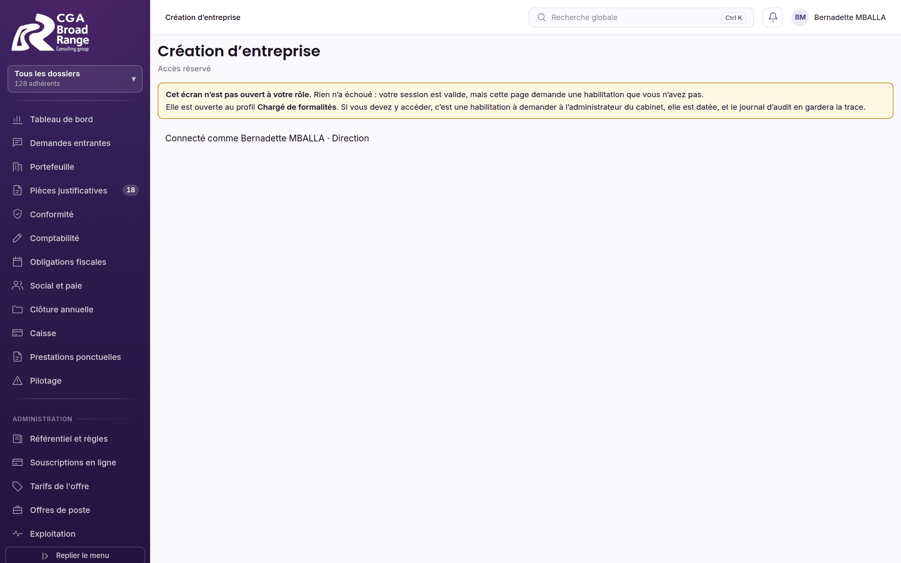
La direction devant le pipeline de création : l'écran est réservé au chargé de formalités, et le message le dit.
2Se connecter et sécuriser son compte
Une seule porte d'entrée pour tous : le personnel du cabinet et les adhérents se connectent sur le même écran, et la console ouvre l'espace qui correspond au compte.
Activer son compte la première fois
À quoi ça sert
Choisir votre mot de passe après la création de votre compte par l'administrateur.
Qui
Tout nouveau collaborateur.
Ouvrez le courriel d'invitation reçu à votre adresse professionnelle et cliquez sur le lien d'activation.
Choisissez votre mot de passe, confirmez-le, puis validez.
Vous arrivez sur votre espace de travail.
Tant que le lien n'a pas été suivi, l'écran Comptes et habilitations affiche le compte comme « Jamais activé ». Si le courriel s'est perdu, demandez à l'administrateur de renvoyer une invitation.
Se connecter
Qui
Tous les comptes actifs.
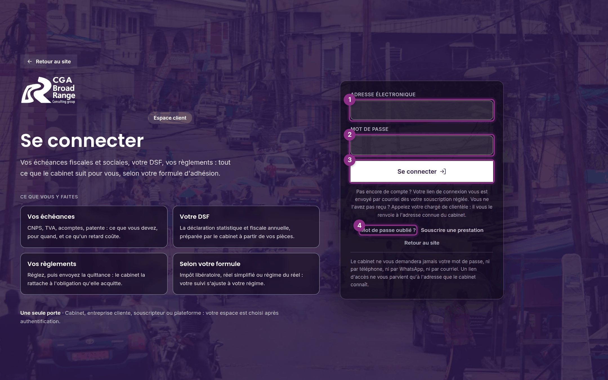
1Adresse électronique 2Mot de passe 3Se connecter 4Mot de passe oublié
Ouvrez l'adresse de la console communiquée par le cabinet.
Saisissez votre adresse électronique et votre mot de passe.
Cliquez sur Se connecter. Vous arrivez sur votre écran d'accueil : le tableau de bord pour la plupart des rôles, la caisse pour la responsable de caisse, les comptes pour l'administrateur.
Le cabinet ne vous demandera jamais votre mot de passe, ni par téléphone, ni par WhatsApp, ni par courriel. Après plusieurs tentatives infructueuses en peu de temps, la plateforme refuse provisoirement les connexions : attendez quelques minutes avant de réessayer plutôt que d'insister.
Mot de passe oublié
Sur l'écran de connexion, cliquez sur Mot de passe oublié ?
Saisissez l'adresse de votre compte puis Recevoir un lien.
Ouvrez le courriel reçu et choisissez un nouveau mot de passe.
La demande de lien de réinitialisation.
Pour fermer votre session, cliquez sur la flèche à droite de votre nom, en bas de la barre latérale (« Se déconnecter »). Fermez toujours votre session sur un poste partagé.
Le second facteur : quand il est exigé
À quoi ça sert
Protéger les gestes les plus sensibles par un code à six chiffres affiché sur votre téléphone, en plus du mot de passe.
Qui
Le réviseur (consigner un dépôt de déclaration, déposer la TVA, consigner l'accusé de la DSF) et le super administrateur (régler la matrice des rôles, accorder une faveur).
Le second facteur n'est pas demandé à la connexion. Il l'est au moment du geste sensible : l'écran affiche alors « … exige le second facteur ». Une fois le code saisi, la session reste renforcée quinze minutes : vous enchaînez les gestes sans retaper de code.
Associer votre application d'authentification (une seule fois)
Il vous faut sur votre téléphone une application d'authentification (Google Authenticator, Microsoft Authenticator, FreeOTP ou équivalent).
Ouvrez un écran qui exige le second facteur (par exemple Obligations fiscales, bloc « Constater un dépôt »). Cliquez sur Associer une application d'authentification.
La console répond : « Un lien vient d'être envoyé à l'adresse de votre compte ». Ouvrez ce courriel dans le même navigateur, où vous êtes connecté. Le lien est valable trente minutes.
Sur la page « Associer une application d'authentification », préparez d'abord votre téléphone, puis cliquez sur Afficher ma clé.
Saisissez la clé dans l'application (ou touchez « Ouvrir dans l'application d'authentification » depuis le téléphone).
Tapez le premier code à six chiffres affiché par l'application, puis Activer. Le message « Second facteur activé. La session est renforcée pour quinze minutes. » confirme l'association.
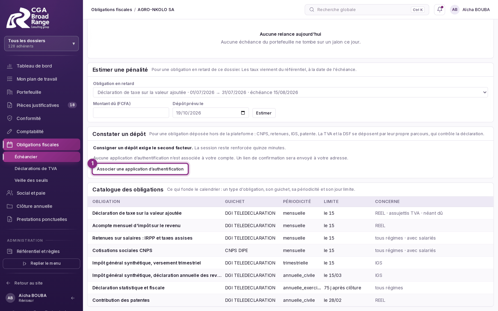
1Le bouton d'association, sous le geste qui l'exige.
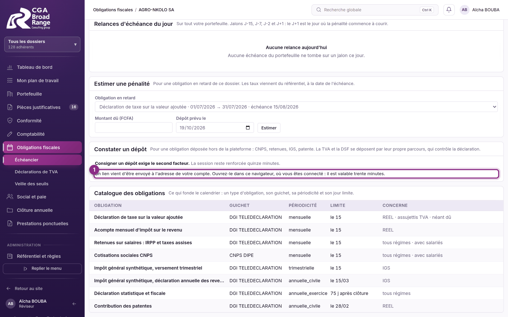
1Le lien part à l'adresse du compte.
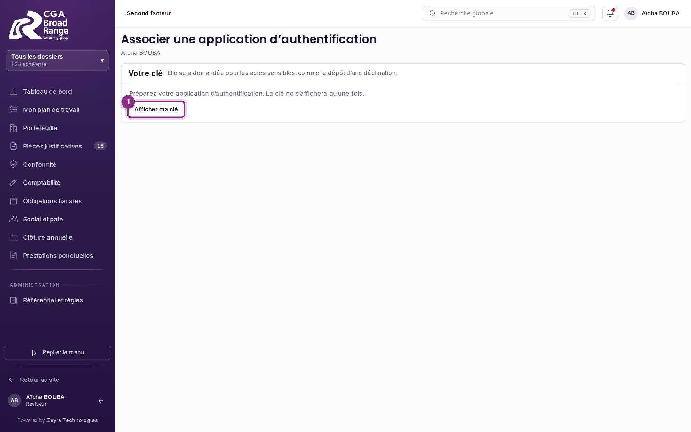
1La clé ne s'affiche qu'une fois.
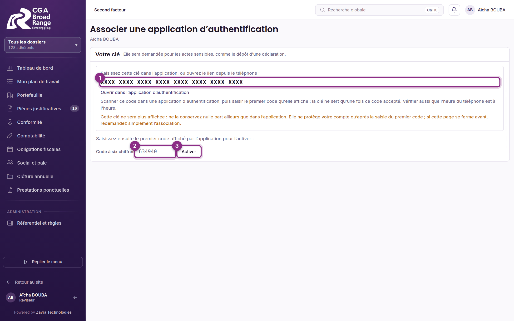
1La clé (masquée sur cette capture) 2Premier code 3Activer
La clé ne protège votre compte qu'après la saisie du premier code. Si la page se ferme avant, rien n'est perdu ni bloqué : redemandez l'association, un nouveau lien vous est envoyé. Ne conservez la clé nulle part ailleurs que dans l'application.
Saisir le code au moment du geste
Sous le geste, tapez le code du moment dans Code à six chiffres.
Cliquez sur Renforcer la session. Le formulaire du geste apparaît.
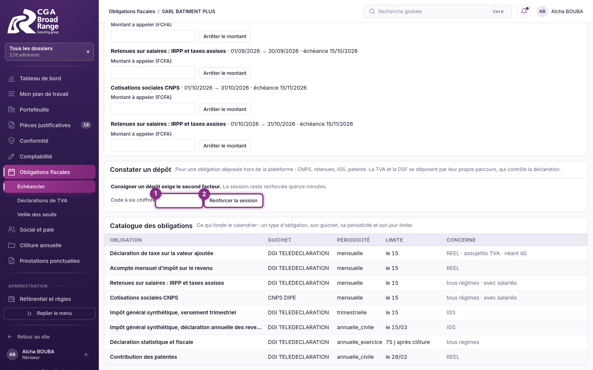
1Code à six chiffres 2Renforcer la session. Le geste (ici, consigner un dépôt) s'ouvre ensuite.
Si tous vos codes sont refusés, vérifiez l'heure de votre téléphone : un décalage de plus d'une minute invalide les codes. Téléphone perdu ou changé : voir chapitre 19, « Retirer le second facteur d'un collègue ».
3Se repérer dans la console
La console se lit de haut en bas comme la vie d'un dossier : la pièce arrive, on la contrôle, on la comptabilise, on déclare, on clôture.
L'écran de travail
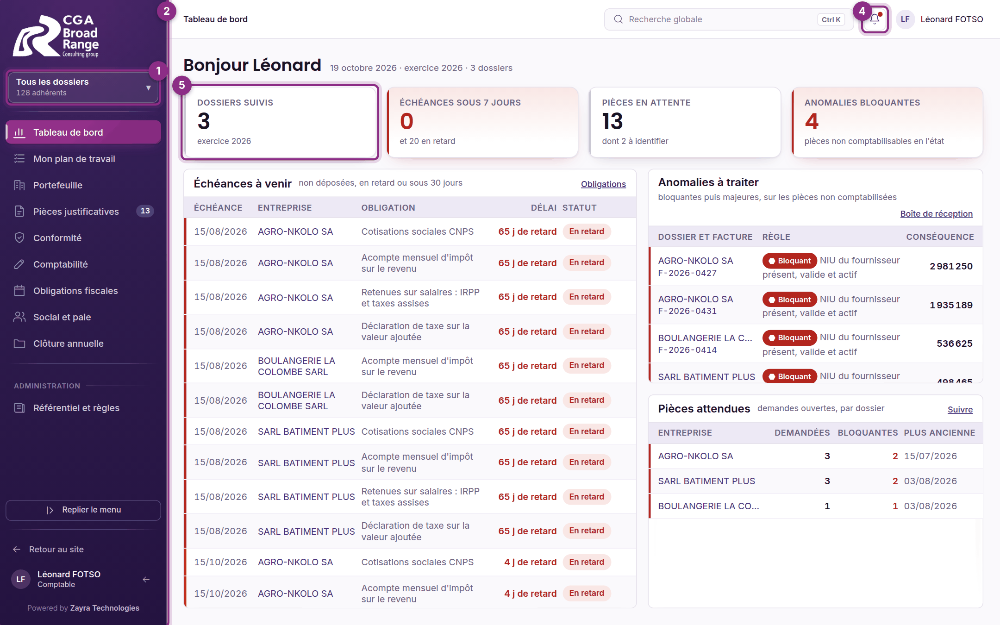
1Sélecteur de dossier 2Menu, selon votre rôle 3Recherche globale (CtrlK) 4Notifications 5Indicateurs du jour
La barre latérale porte le menu. Les pastilles chiffrées signalent ce qui attend (pièces en attente, anomalies bloquantes). Replier le menu libère de la place sur un petit écran.
Le sélecteur de dossier, en haut du menu, choisit l'entreprise sur laquelle vous travaillez. Les écrans de comptabilité, de paie, d'obligations et de clôture s'ouvrent sur ce dossier ; leur sous-titre rappelle « changez de dossier dans la barre latérale ».
La recherche globale trouve un dossier par son NIU ou sa dénomination, une pièce par son numéro ou son émetteur.
Les notifications (la cloche) disent ce que le cabinet a fait et qui vous concerne : un écart à trancher, un dossier confié, une réponse d'adhérent.
Changer de dossier
Cliquez sur le sélecteur (« Tous les dossiers » ou le nom du dossier courant).
Tapez quelques lettres de la dénomination ou du NIU, ou choisissez dans « Dossiers récents ».
« Tous les dossiers » revient à la vue consolidée de votre portefeuille.
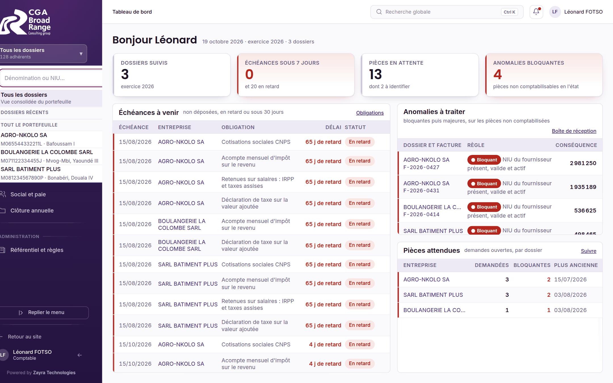
Le sélecteur ouvert : recherche, vue consolidée, dossiers récents puis tout le portefeuille.
Avant de saisir ou d'arrêter quoi que ce soit, relisez le nom du dossier dans le fil d'Ariane en haut de l'écran (par exemple « Comptabilité / AGRO-NKOLO SA / Saisie »). C'est le dossier sur lequel le geste portera.
Le tableau de bord
À quoi ça sert
Voir d'un coup d'œil votre périmètre : dossiers suivis, échéances sous sept jours et en retard, pièces en attente, anomalies bloquantes.
Qui
Tous les rôles du cabinet sauf l'administrateur et la caisse. Le comptable voit son portefeuille et lui seul ; la direction et le réviseur voient tout le cabinet.
Sous les indicateurs : les échéances à venir (en retard d'abord), les anomalies à traiter et les pièces attendues par dossier. Chaque ligne mène à l'écran qui la traite.
Mon plan de travail
À quoi ça sert
Répondre à « par quoi je commence ? ». La console range vos tâches du jour par échéance puis par gravité.
Qui
Comptable et réviseur.
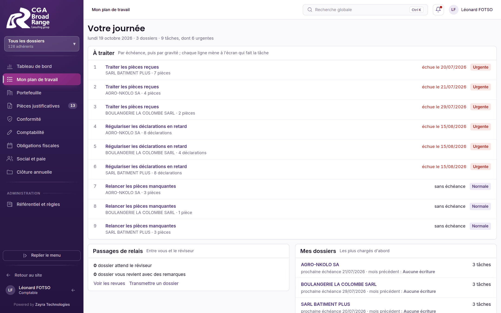
« Votre journée » : les tâches urgentes en tête, les passages de relais avec le réviseur, et vos dossiers les plus chargés.
Ouvrez Mon plan de travail.
Traitez les tâches dans l'ordre : chaque ligne (« Traiter les pièces reçues », « Régulariser les déclarations en retard », « Relancer les pièces manquantes ») ouvre directement l'écran concerné.
Le bloc Passages de relais indique les dossiers qui attendent le réviseur et ceux qui vous reviennent avec des remarques.
4Le portefeuille d'adhérents
Le portefeuille liste les entreprises suivies. La fiche d'un dossier réunit son identité, ses statuts datés, sa collecte du mois, sa fiche signalétique pour la DSF, ses honoraires et la liste de ceux qui y ont accès.
Consulter le portefeuille
Qui
Tous les rôles qui lisent les dossiers. Le comptable ne voit que les dossiers qui lui sont confiés.
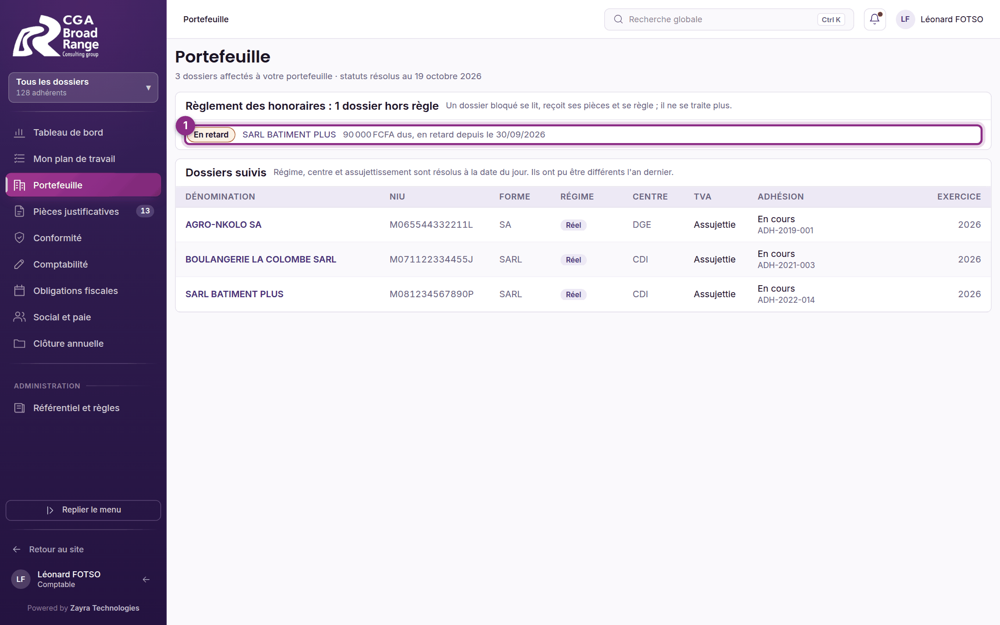
1Le bandeau « Règlement des honoraires » signale les dossiers hors règle avant tout le reste.
Pour chaque dossier : NIU, forme, régime (réel, IGS…), centre des impôts, assujettissement à la TVA, adhésion et exercice. Ces statuts sont résolus à la date du jour : ils ont pu être différents l'an dernier. Cliquez sur la dénomination pour ouvrir la fiche.
La fiche du dossier
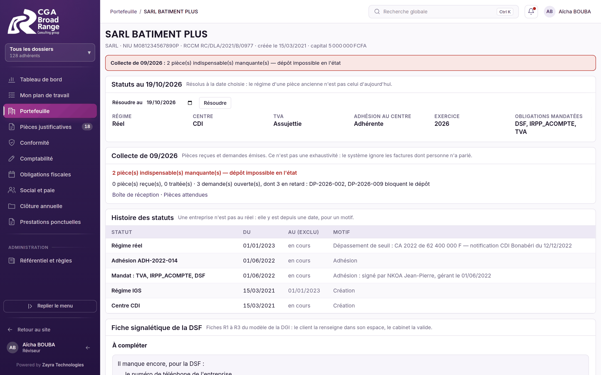
En tête : la collecte du mois. Ici, deux pièces indispensables manquent et le dépôt est impossible en l'état.
Statuts au … : choisissez une autre date dans Résoudre au puis Résoudre pour savoir quel était le régime d'une pièce ancienne.
Collecte du mois : pièces reçues, traitées, demandes ouvertes et celles qui bloquent le dépôt.
Histoire des statuts : chaque statut avec sa date de début, sa fin et son motif.
Exercices : un exercice clos n'accepte plus aucune écriture.
Dirigeants, associés et tiers, Honoraires, Qui a accès au dossier.
Valider la fiche signalétique de la DSF
À quoi ça sert
Les fiches R1 à R3 du modèle de la DGI (coordonnées, signataire, banque, activités NACAM…) que la DSF reprend.
Qui
L'adhérent la renseigne dans son espace ; le comptable ou le réviseur peut la compléter ; le réviseur la valide.
Dans la fiche du dossier, descendez jusqu'à Fiche signalétique de la DSF. La liste « Il manque encore » dit ce qui reste à renseigner.
Complétez les champs manquants (téléphone, ville du siège, signataire, banque, au moins une activité avec son code NACAM).
Enregistrer, puis Soumettre à la validation.
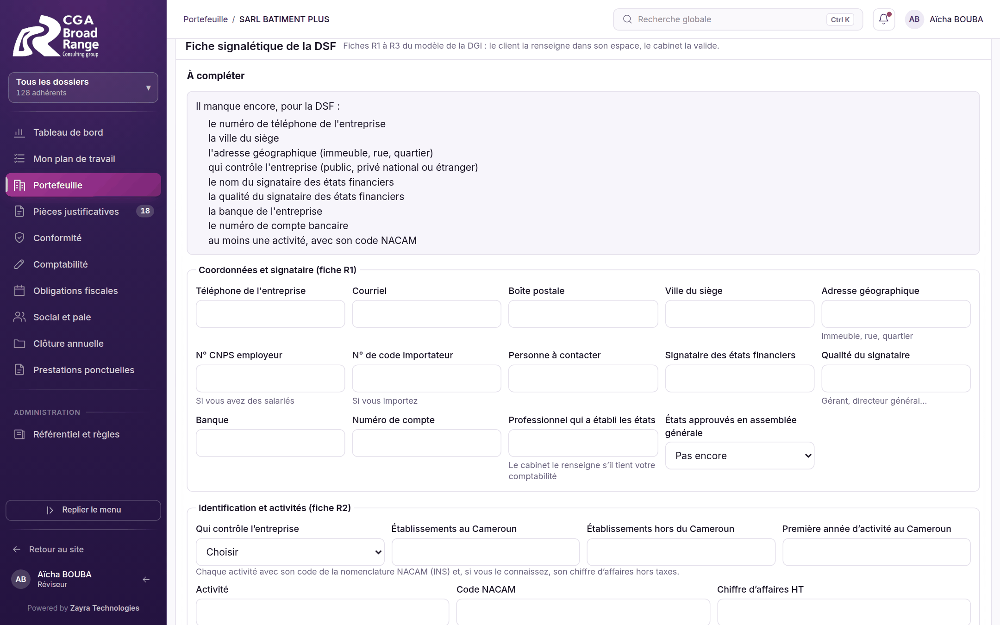
La fiche signalétique, fiches R1 et R2.
Honoraires et accès au dossier
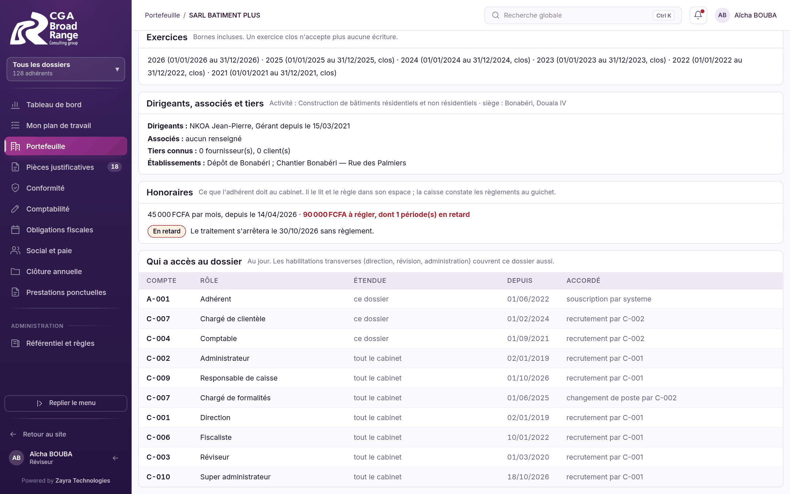
Le contrat d'honoraires (45 000 FCFA par mois), ce qui reste dû et la date d'arrêt du traitement ; puis qui a accès au dossier, avec la date et l'auteur de chaque habilitation.
La règle de dépassement et la grâce de règlement sont décrites au chapitre 14. La résiliation d'une adhésion est un bouton Résilier réservé à la direction, dans la liste du portefeuille.
5Demandes entrantes et création d'entreprise
Un visiteur dépose une demande sur le site du cabinet. Elle arrive dans la console déjà affectée à un responsable, et sa qualification s'ouvre remplie par les réponses du client. Le responsable confirme, chiffre, émet la proforma ; une fois réglée, le dossier de création s'ouvre seul.
Traiter une demande entrante
Qui
Chargé de formalités et direction (lecture et qualification). L'administrateur lit les demandes.
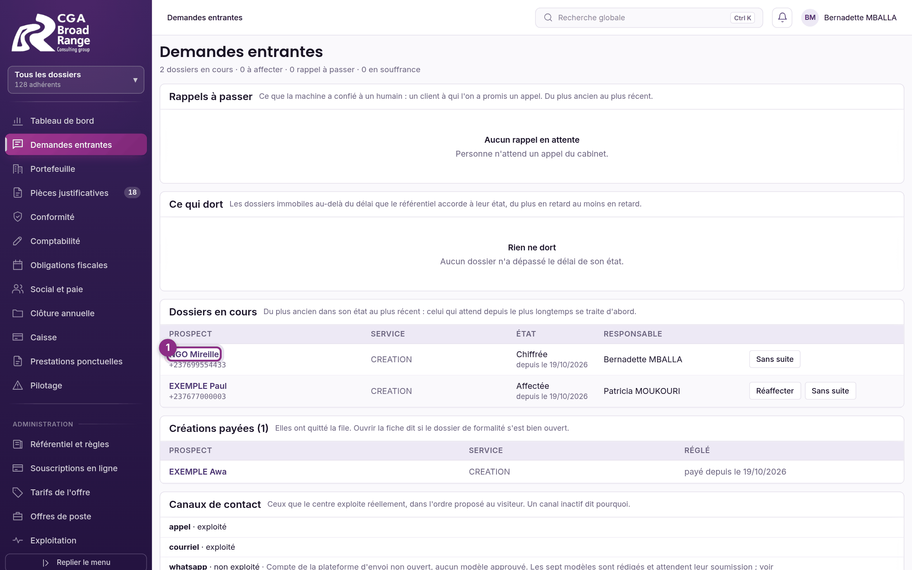
1La demande, déjà affectée. Plus bas : les créations payées et les canaux de contact réellement exploités.
Ouvrez Demandes entrantes. Traitez d'abord les Rappels à passer (un client à qui l'on a promis un appel), puis Ce qui dort, puis les dossiers en cours, du plus ancien au plus récent.
Cliquez sur le nom du prospect. En haut, « La demande » montre ce que le visiteur a écrit, tel quel.
Appelez le client. Dans Premier échange, notez ce qui a été dit et validez J'ai joint le client. Déclarez-le même sans réponse : c'est ce qui arrête le compte à rebours de la réaffectation.
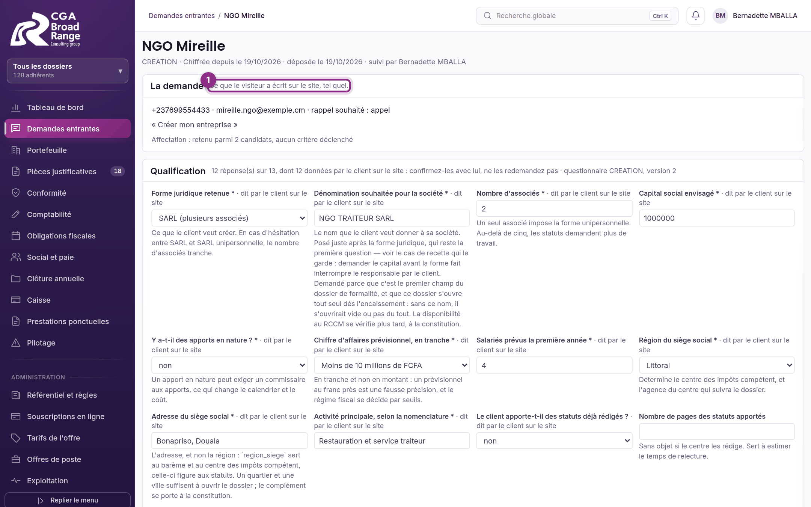
1Ce que le visiteur a écrit. Dessous, la qualification ouverte.
Qualifier, puis chiffrer
Dans Qualification, chaque réponse donnée sur le site porte la mention « dit par le client sur le site ». Confirmez-les avec lui, ne les redemandez pas. Corrigez ce qu'il précise au téléphone.
Cliquez sur Enregistrer les réponses.
Dans Chiffrage, déclarez le score de charge puis Calculer l'intervalle : le barème rend une fourchette de prix calculée sur les réponses enregistrées.
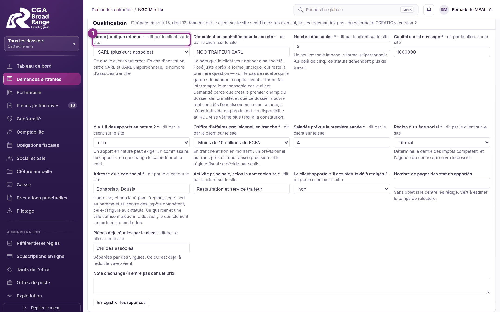
1Une réponse reprise du site, à confirmer.
Le score de charge n'est pas encore mesuré pour un prospect : il est déclaré par le responsable et conservé avec la proforma.
Établir et émettre la proforma
Dans Proforma, le document est proposé d'après la forme juridique (par exemple « Proforma de formalisation pour une SARL »). Vous pouvez en choisir un autre.
L'aperçu avant émission reproduit le document que recevra le client. Retouchez une ligne directement dans l'aperçu, supprimez-la (×) ou + Ajouter une ligne. Le total général est la somme des lignes : il ne se tape pas.
Si le montant sort de l'intervalle calculé, un motif est obligatoire.
Laissez cochée la case d'envoi par courriel, puis Émettre la proforma. Elle est numérotée et le courriel part avec le lien d'acceptation et le PDF.
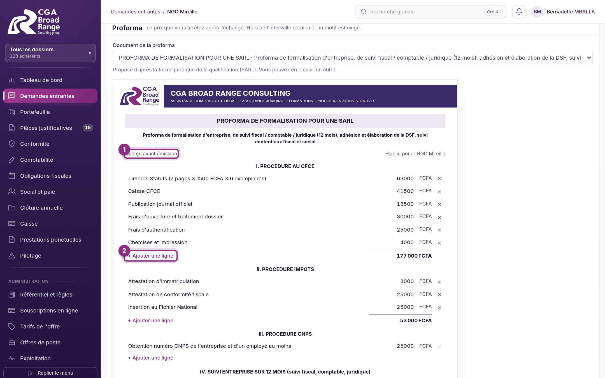
1Aperçu avant émission 2Ajouter une ligne
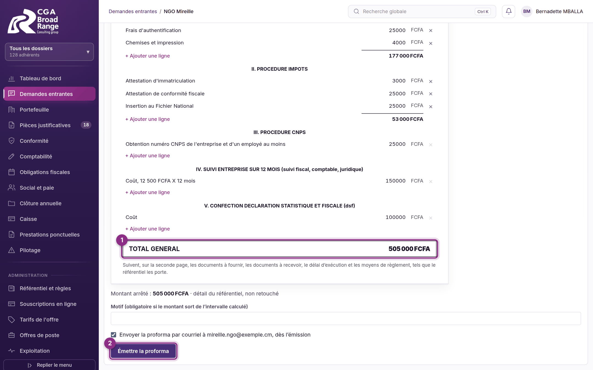
1Total général 2Émettre la proforma
Les modèles de proforma portent la mention « transcrit, non confirmé par la direction » tant que la direction n'a pas validé leurs lignes. Si le client a accepté d'être contacté sur WhatsApp, un bouton ouvre WhatsApp avec le message prêt ; l'envoi automatique par WhatsApp, lui, n'est pas actif (compte de la plateforme d'envoi non ouvert).
Le client accepte la proforma en ligne et règle soit par mobile money (opérateur Tara), soit au guichet du cabinet, où la caisse constate le versement (chapitre 14). Le règlement constaté ouvre automatiquement le dossier de création et le compte du client.
Suivre une création d'entreprise
Qui
Chargé de formalités.
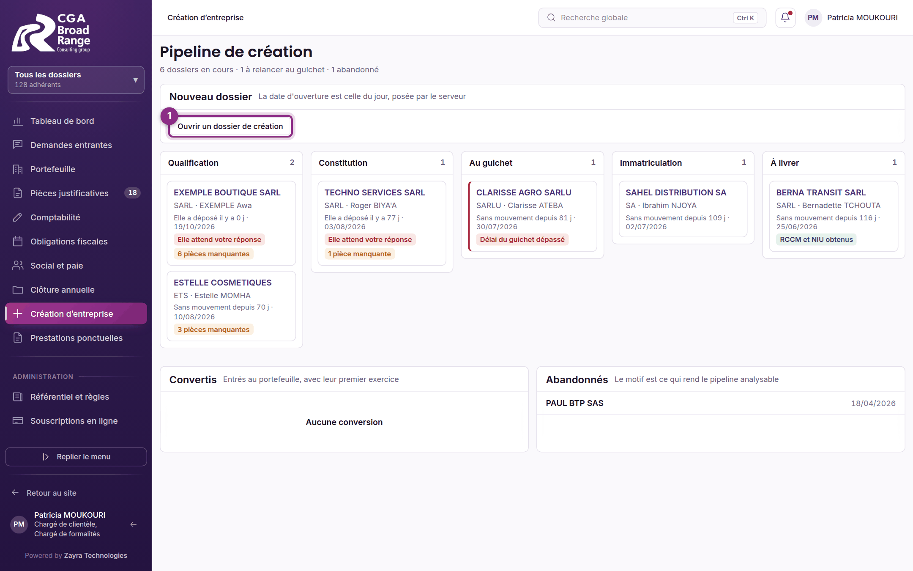
1Ouvrir un dossier de création à la main. Les colonnes suivent les étapes : qualification, constitution, au guichet, immatriculation, à livrer.
Ouvrez Création d'entreprise. Chaque carte dit depuis quand le dossier est immobile et ce qui manque (« Elle attend votre réponse », « Délai du guichet dépassé »).
Ouvrez un dossier. Ce qui bloque donne le diagnostic du jour.
Dans Pièces de constitution, pour chaque pièce reçue : joignez le document, indiquez comment il est arrivé (par WhatsApp, au guichet, par courriel), puis Marquer reçue. Une pièce réclamée par le guichet et absente de la liste s'ajoute par Ajouter une pièce hors liste.
Quand l'étape est remplie, Passer à « … » (un cran à la fois). L'abandon reste toujours possible, avec son motif.
À l'immatriculation, saisissez dans Identifiants délivrés le RCCM, le NIU, la patente et le numéro CNPS, chacun avec sa date d'obtention, puis Enregistrer les identifiants.
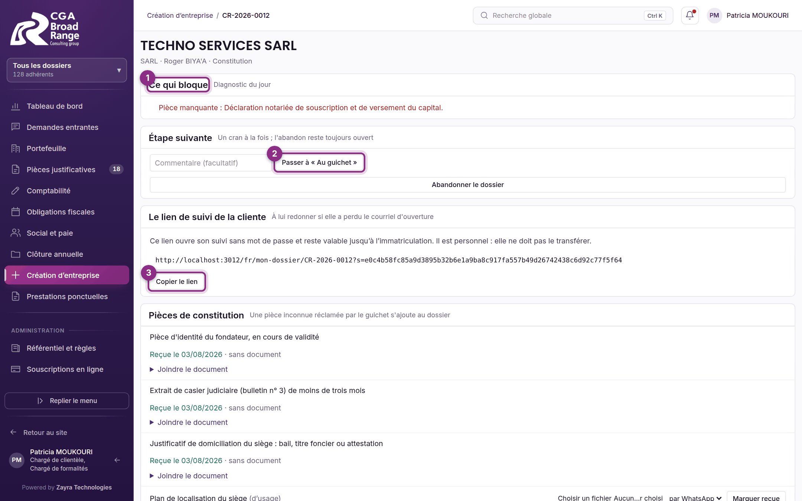
1Ce qui bloque 2Étape suivante 3Copier le lien de suivi de la cliente
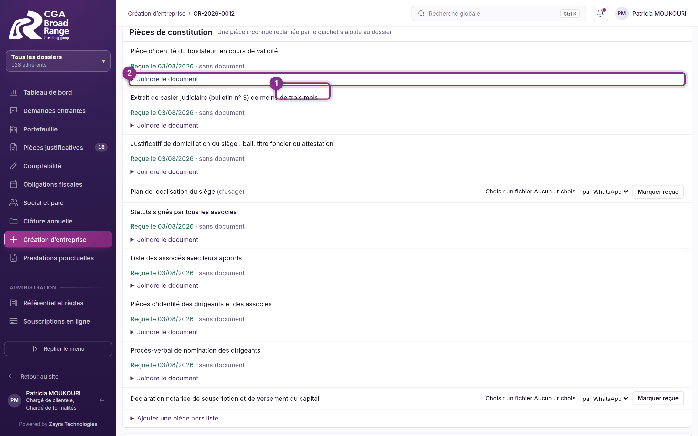
1Pièce reçue 2Joindre le document
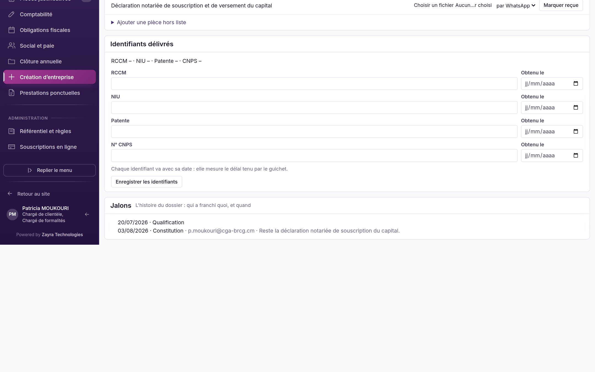
Identifiants délivrés, avec leurs dates, et jalons du dossier.
Le lien de suivi permet à la cliente de suivre sa création sans mot de passe jusqu'à l'immatriculation. S'il l'a perdu, Copier le lien et redonnez-le-lui. Il est personnel : elle ne doit pas le transférer.
6Pièces reçues et contrôle de conformité
Les pièces arrivent par l'application mobile, le portail, le courriel, WhatsApp ou au cabinet. Chaque facture lue passe par le contrôle de conformité, qui dit si elle peut être comptabilisée et ce que coûte une anomalie.
La boîte de réception
Qui
Comptable et réviseur (identifier, comptabiliser) ; chargé de clientèle (déposer).
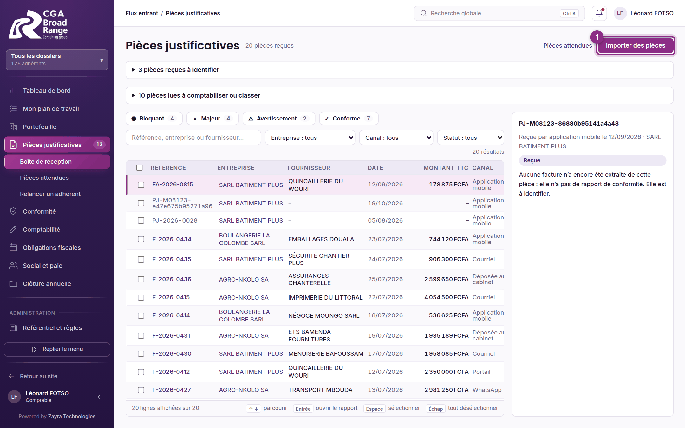
1Importer des pièces 2Compteurs par gravité 3Filtres par entreprise, canal, statut
Ouvrez Pièces justificatives > Boîte de réception. En tête : les pièces reçues à identifier et les pièces lues à comptabiliser ou classer.
Filtrez par entreprise, canal ou statut (reçue, lue, comptabilisée, rectification demandée).
Au clavier : ↑↓ pour parcourir, Entrée pour ouvrir le rapport, Espace pour sélectionner.
Une pièce déposée au cabinet s'ajoute par Importer des pièces.
Lire le rapport de conformité d'une pièce
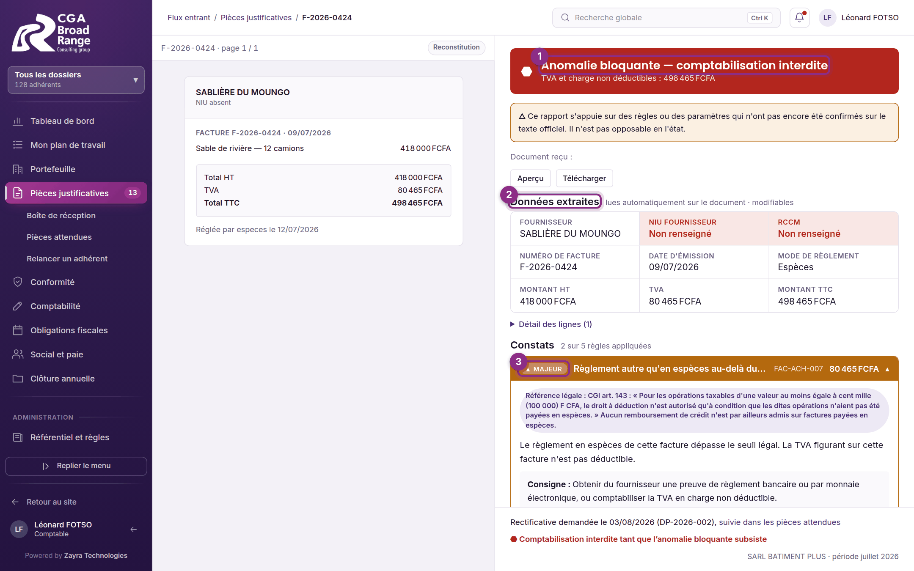
1Verdict : anomalie bloquante, comptabilisation interdite 2Données extraites, modifiables 3Constat majeur, avec son fondement légal
Ouvrez la pièce. À gauche, le document reçu (Aperçu, Télécharger) ; à droite, le verdict et les données extraites.
Vérifiez les données extraites (fournisseur, NIU, montants, mode de règlement) contre le document et corrigez-les si besoin.
Lisez chaque constat : sa règle (par exemple FAC-ACH-007), sa référence légale, sa conséquence (TVA non déductible), la consigne à suivre et la source consultée.
Dépliez Trace du contrôle pour voir les paramètres du référentiel employés, avec leur valeur à la date du contrôle.
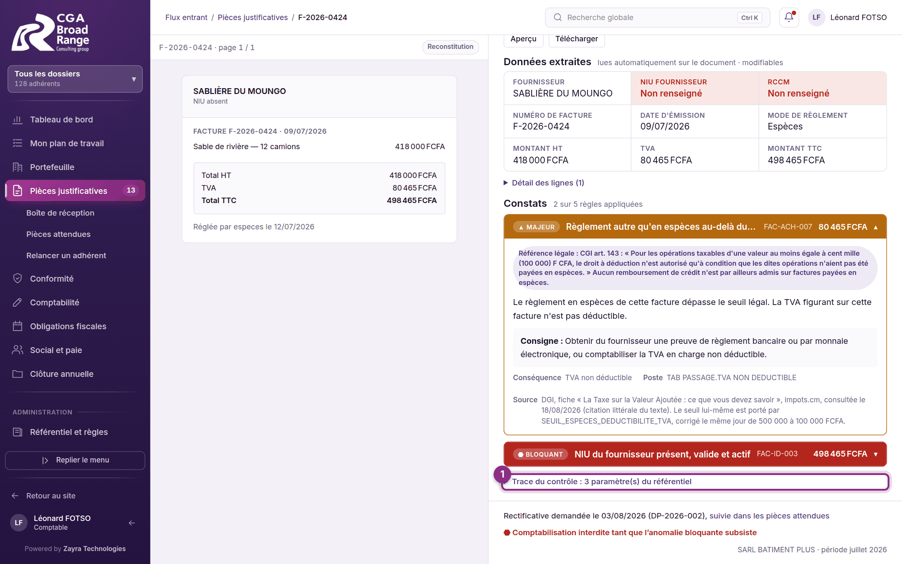
1Trace du contrôle : les paramètres employés. En bas, la rectificative demandée et suivie dans les pièces attendues.
Tant qu'une anomalie bloquante subsiste (par exemple « NIU du fournisseur présent, valide et actif »), la pièce ne peut pas être comptabilisée. Il faut obtenir la pièce rectifiée, ou faire écarter le constat par le réviseur, avec un motif.
La lecture automatique par Claude (l'agent qui préremplit les données d'une facture) est une option. Sans clé d'API configurée par le cabinet, l'écran le dit et la saisie se fait à la main, dans les mêmes champs : rien n'est bloqué. Quand elle est active, l'agent propose et le collaborateur décide. Le bandeau « ce rapport s'appuie sur des règles ou des paramètres qui n'ont pas encore été confirmés » rappelle qu'une partie du référentiel attend la validation du fiscaliste.
Écarter un constat
Qui
Réviseur uniquement. Un motif est exigé avant l'acte.
Dans le rapport, cliquez sur Écarter un constat.
Choisissez le constat, rédigez le motif et joignez si possible une pièce d'appui.
Validez. La dérogation entre au journal des dérogations (chapitre 18). Elle ne se modifie ni ne se supprime : elle se lève depuis la pièce, ce qui rétablit le constat.
Pièces attendues et relances
Une demande de pièce (référence DP-…) naît d'une anomalie (facture rectificative) ou d'un besoin (relevé bancaire, contrat de bail). Dans Pièces attendues, quand la pièce arrive, saisissez sa référence et cliquez sur Rattacher la pièce reçue : une demande satisfaite ne se relance plus.
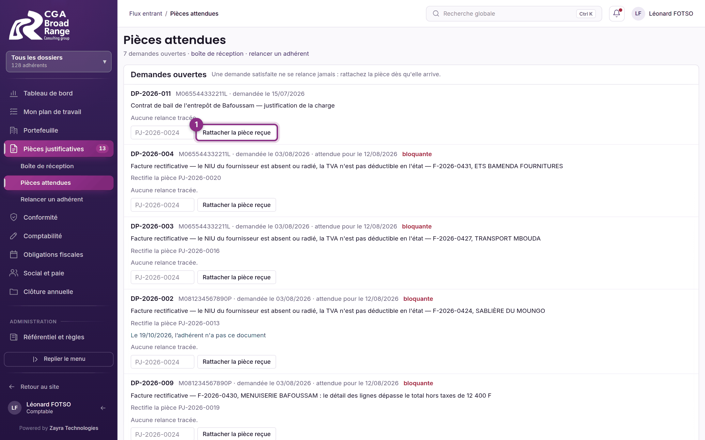
1Rattacher la pièce reçue. La réponse de l'adhérent (« n'a pas ce document ») s'affiche sous la demande.
Relancer un adhérent
Qui
Chargé de clientèle, comptable, réviseur.
Ouvrez Relancer un adhérent, choisissez le dossier et le mois, puis Afficher.
« Ce qui manque » est déduit des relevés, des séries habituelles, des obligations et des anomalies. Cochez les pièces à demander.
Choisissez le modèle (relance amiable ou relance ferme) et Mettre à jour l'aperçu : la liste des pièces cochées s'insère dans le message.
Choisissez les canaux (application, courriel) et Envoyer maintenant. Le message part aussi en notification dans l'espace de l'adhérent.
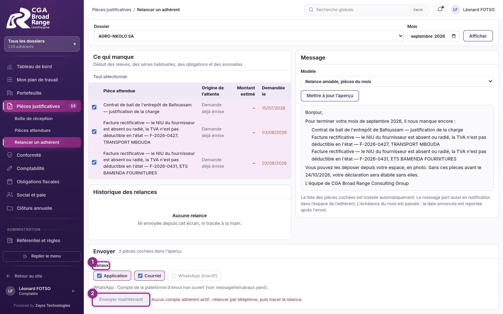
1Canaux d'envoi 2Envoyer maintenant
Si le dossier n'a aucun compte adhérent actif, le bouton est grisé : l'écran affiche « Aucun compte adhérent actif : relancer par téléphone, puis tracer la relance ». WhatsApp apparaît « inactif » : le compte de la plateforme d'envoi n'est pas encore ouvert.
La file d'anomalies
Qui
Comptable, réviseur, fiscaliste. C'est l'écran de travail quotidien du réviseur.
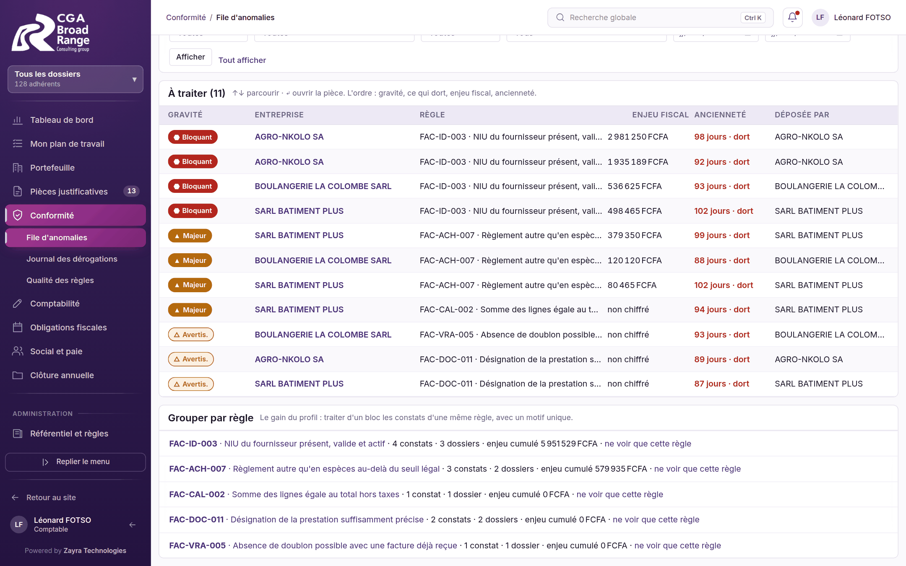
La file : gravité d'abord, puis ce qui dort, l'enjeu fiscal, l'ancienneté. « Grouper par règle » traite d'un bloc les constats d'une même règle.
Filtrer ne fait pas disparaître le travail : les compteurs en tête restent ceux de la file entière. Un constat de plus de quinze jours « dort » et passe devant dans sa gravité.
7Saisie et écritures
Une écriture naît en brouillon, se valide, puis se fige. Une écriture validée ne se corrige que par son inverse, la contre-passation. Il n'y a pas de bouton « supprimer ».
Saisir une écriture
Qui
Comptable et réviseur. Le chargé de clientèle lit la balance mais ne saisit pas.
Choisissez le dossier dans le sélecteur, puis Comptabilité > Saisie d'écriture.
Choisissez le journal (AC achats, VE ventes, BQ banque, MM mobile money, CA caisse, OD opérations diverses, AN à-nouveaux), la date de l'opération, le libellé et la pièce justificative.
Sur chaque ligne : le compte (la liste propose les comptes du plan), le libellé de ligne, le sens (débit ou crédit) et le montant. Huit lignes sont offertes.
Vérifiez le compteur « Débit / Crédit / équilibrée », puis Enregistrer en brouillon.
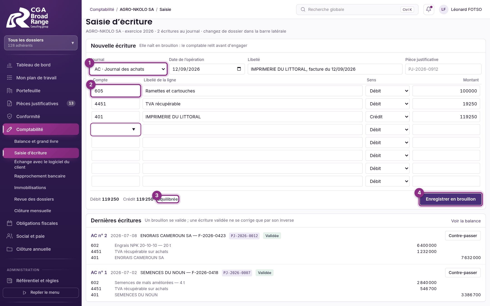
1Journal 2Compte de la ligne 3Contrôle d'équilibre 4Enregistrer en brouillon
Le compteur d'équilibre est une aide : il n'empêche rien. La dernière ligne n'est jamais complétée d'office, pour que chaque montant soit relu. Une écriture déséquilibrée est refusée à l'enregistrement, avec l'écart en clair (par exemple « débit 150000, crédit 140000, écart 10000 »).
Valider ou contre-passer
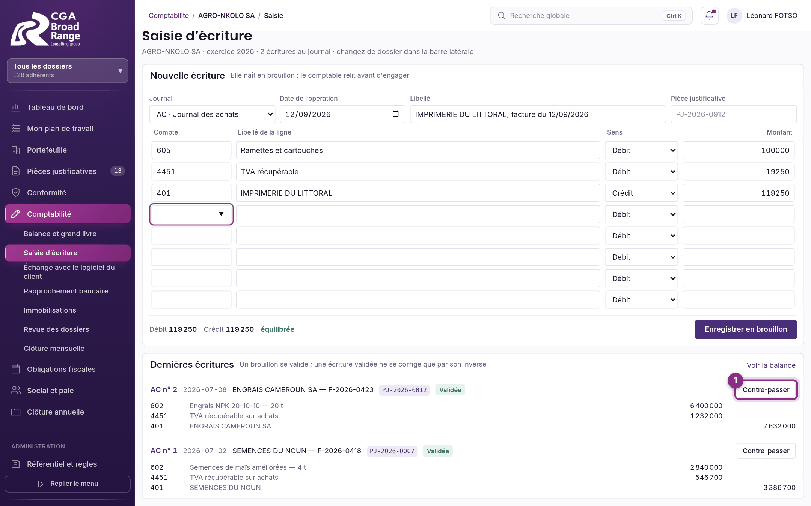
1Contre-passer une écriture validée. Chaque écriture porte son journal, son numéro, sa pièce et son statut.
Dans Dernières écritures, relisez le brouillon et validez-le : il porte alors le nom de celui qui l'a validé et la date.
Pour corriger une écriture validée, cliquez sur Contre-passer. Le motif est exigé avant l'acte. L'écriture inverse est passée, visible au grand livre ; saisissez ensuite l'écriture juste.
Échanger avec le logiciel du client
À quoi ça sert
Exporter les écritures validées, reprendre un fichier exporté par un autre logiciel, régler le plan d'imputation propre au dossier.
Qui
Comptable et réviseur.
Échange avec le logiciel du client > Exporter : choisissez l'exercice, le format (format pivot du centre, ou Sage 100) et éventuellement un journal. Seules les écritures validées sortent : un lot qui contient un brouillon est refusé en entier.
Reprendre un fichier : chargez le fichier, choisissez exercice et format, puis Contrôler. Rien n'est écrit au contrôle ; les écritures appliquées entrent en brouillon.
Plan d'imputation du dossier : les règles « quand le libellé contient… alors tel compte » qui proposent le compte de charge des achats.
Le profil Sage 100 n'a pas encore été confronté à une installation réelle d'un client : fournissez au cabinet un fichier d'exemple issu du Sage du client pour l'ajuster.
Rapprocher un relevé bancaire
Rapprochement bancaire > Importer un relevé : choisissez le compte (BQ banque ou MM mobile money), la période, recopiez les soldes initial et final du relevé, choisissez le format CSV et chargez le fichier.
Importer et rapprocher : ce qui correspond sans doute possible se rapproche seul ; le reste apparaît à traiter, avec l'écart.
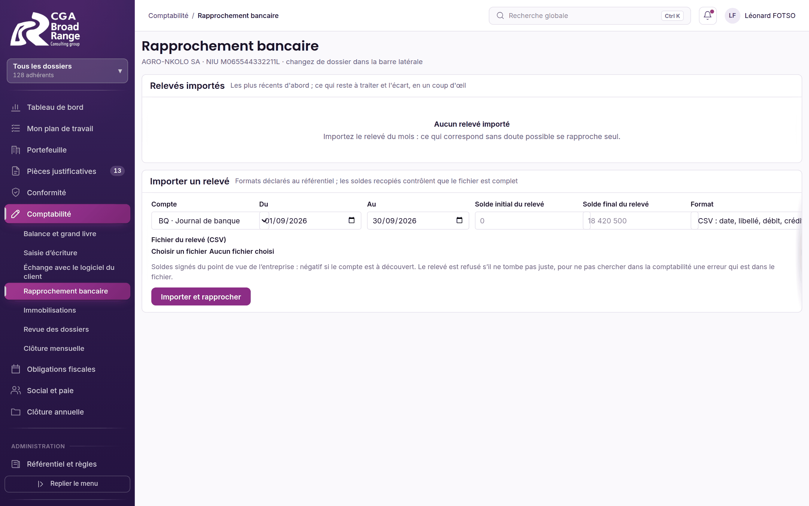
L'import d'un relevé. Les soldes recopiés contrôlent que le fichier est complet.
Les soldes se saisissent du point de vue de l'entreprise (négatifs si le compte est à découvert). Un relevé dont les mouvements ne retombent pas sur les soldes recopiés est refusé : l'erreur est alors dans le fichier, pas dans la comptabilité.
8Livres légaux et balances
La balance et le grand livre sont calculés sur les écritures validées seules. Les livres obligatoires et les annexes de la DSF se téléchargent depuis le même écran.
Lire la balance et le grand livre
Qui
Tous les rôles qui lisent la comptabilité.
Choisissez le dossier, puis Comptabilité > Balance et grand livre.
En tête, les trois contrôles d'avant dépôt : balance équilibrée, numérotation continue, résultat de l'exercice.
Filtrez par numéro ou intitulé de compte, période et journal, puis Filtrer.
Cliquez sur un numéro de compte pour ouvrir son grand livre.
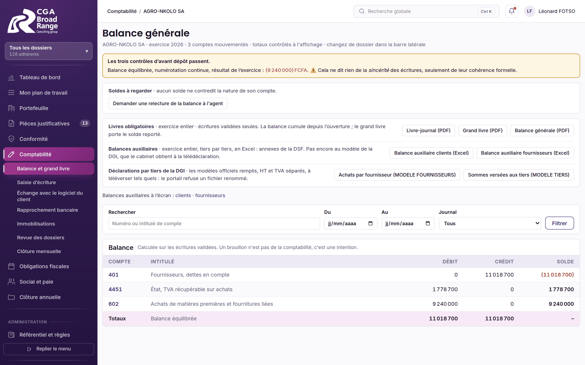
La balance générale, avec ses totaux contrôlés à l'affichage.
Les trois contrôles disent la cohérence formelle des écritures, pas leur sincérité. Demander une relecture de la balance à l'agent n'est utile que si la lecture par Claude est configurée.
Éditer les livres et les annexes
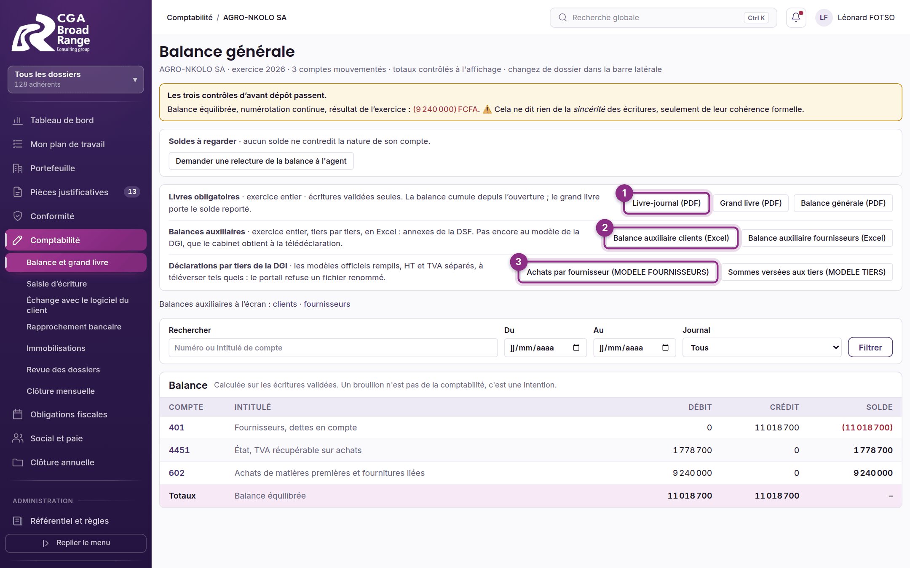
1Livres obligatoires en PDF 2Balances auxiliaires en Excel 3Modèles officiels de la DGI
Balances auxiliaires, tiers par tiers, en Excel : clients et fournisseurs. Elles sont aussi lisibles à l'écran (liens « clients · fournisseurs »).
Déclarations par tiers de la DGI : Achats par fournisseur (MODELE FOURNISSEURS) et Sommes versées aux tiers (MODELE TIERS), les modèles officiels remplis.
Téléversez les modèles de la DGI tels quels, sans les renommer : le portail refuse un fichier renommé.
Les balances auxiliaires ne sont pas encore au modèle de la DGI, que le cabinet obtient à la télédéclaration.
9Immobilisations
Le registre des immobilisations calcule la dotation aux amortissements, la passe en écriture et produit le tableau des amortissements, pièce n° 7 de la DSF (note 3C).
Qui
Comptable et réviseur.
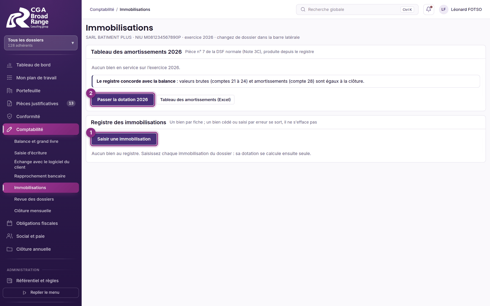
1Saisir une immobilisation 2Passer la dotation de l'exercice
Choisissez le dossier, puis Comptabilité > Immobilisations.
Saisir une immobilisation : un bien par fiche (désignation, compte, date de mise en service, valeur, durée).
Vérifiez le contrôle « Le registre concorde avec la balance » : il compare les comptes 21 à 24 et 28 au registre.
Passer la dotation : la dotation est calculée au prorata des jours et proposée en écriture en brouillon, à valider comme toute écriture.
Tableau des amortissements (Excel) pour la DSF.
Un bien cédé ou saisi par erreur se sort du registre ; il ne s'efface pas. Un achat comptabilisé en classe 2 sans fiche au registre fait échouer le contrôle de concordance : saisissez la fiche.
10Clôture mensuelle et revue
Chaque mois, le comptable vérifie ses points de contrôle, puis transmet le mois au réviseur, ce qui le verrouille. Le réviseur le valide ou le renvoie avec des remarques.
Clôturer et transmettre un mois
Qui
Comptable (transmettre) ; réviseur (réviser).
Comptabilité > Clôture mensuelle : choisissez le dossier et le mois, puis Afficher.
Parcourez les points de contrôle : pièces traitées, aucun brouillon, rapprochement à jour, caisse cohérente, balance équilibrée, numérotation continue, pièces attendues, écarts de constat tranchés. Voir ouvre l'écran du point ; Relancer ouvre la relance.
Rédigez le commentaire pour le réviseur.
Transmettre au réviseur, ou Enregistrer et continuer plus tard.
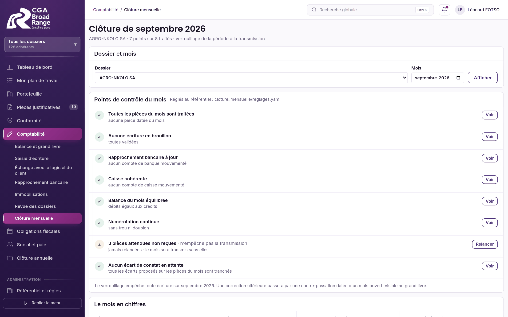
Les huit points de contrôle du mois. Un triangle signale ce qui n'empêche pas la transmission mais reste ouvert.
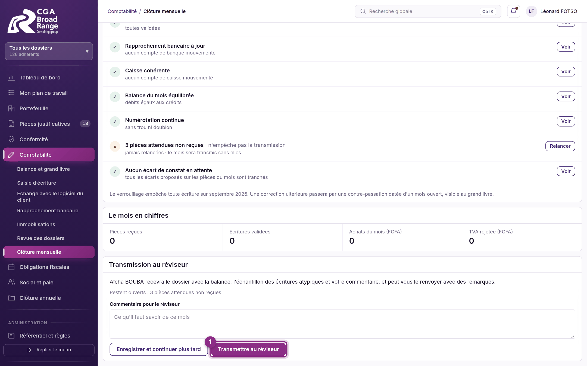
1Transmettre au réviseur : le réviseur reçoit la balance, l'échantillon des écritures atypiques et votre commentaire.
La transmission verrouille la période : plus aucune écriture n'est possible sur ce mois. Une correction ultérieure passera par une contre-passation datée d'un mois ouvert.
Réviser un mois
Dans Revue des dossiers, le réviseur trouve « À réviser » (les plus anciens d'abord). Il valide le mois ou le renvoie avec des remarques ; le comptable répond à chaque remarque dans « Revenus avec des remarques » puis retransmet.
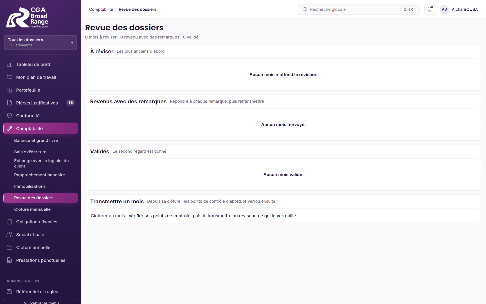
La revue : à réviser, revenus avec des remarques, validés.
La déclaration de TVA d'un mois ne peut être déposée qu'une fois ce mois transmis au réviseur (chapitre 12).
11Paie et CNPS
La paie propose ; le comptable corrige s'il le faut, puis arrête les charges du mois. Seuls les montants arrêtés servent aux appels de fonds et aux déclarations.
Qui
Comptable et réviseur (tous ceux qui lisent la comptabilité du dossier).
Arrêter les charges du mois
Choisissez le dossier, puis Social et paie. L'écran s'ouvre sur la paie du mois : total à verser (dont CNPS), effectif, masse salariale, retenues, charges patronales.
Si le bandeau « Groupe de risque CNPS non renseigné » apparaît, cliquez sur Enregistrer le groupe et saisissez celui de la notification de la CNPS (le groupe A, risque faible, est supposé en attendant).
Dans Arrêter les charges du mois, comparez la colonne « Proposé » (CNPS, IRPP sur salaires, crédit foncier, FNE, taxe de développement local, redevance audiovisuelle) et corrigez la colonne « Arrêté » si nécessaire.
Arrêter les charges du mois.
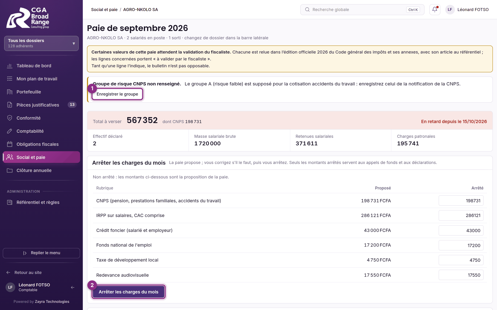
1Enregistrer le groupe CNPS 2Arrêter les charges du mois
Certaines valeurs de la paie portent « à valider par le fiscaliste ». Tant qu'une ligne l'indique, le bulletin n'est pas opposable.
Bulletins, embauches et fichier du personnel
Dans Fichier du personnel, cliquez sur Bulletin en face d'un salarié : le bulletin du mois s'affiche, chaque ligne avec son taux. Imprimer le bulletin (PDF) pour le remettre.
Embaucher un salarié inscrit le salarié et ouvre son premier contrat. Un matricule ne se réattribue pas.
Nouveau contrat (changement de poste ou de salaire) ou Clore (départ). Les sortis restent au fichier : la CNPS peut les réclamer des années après.
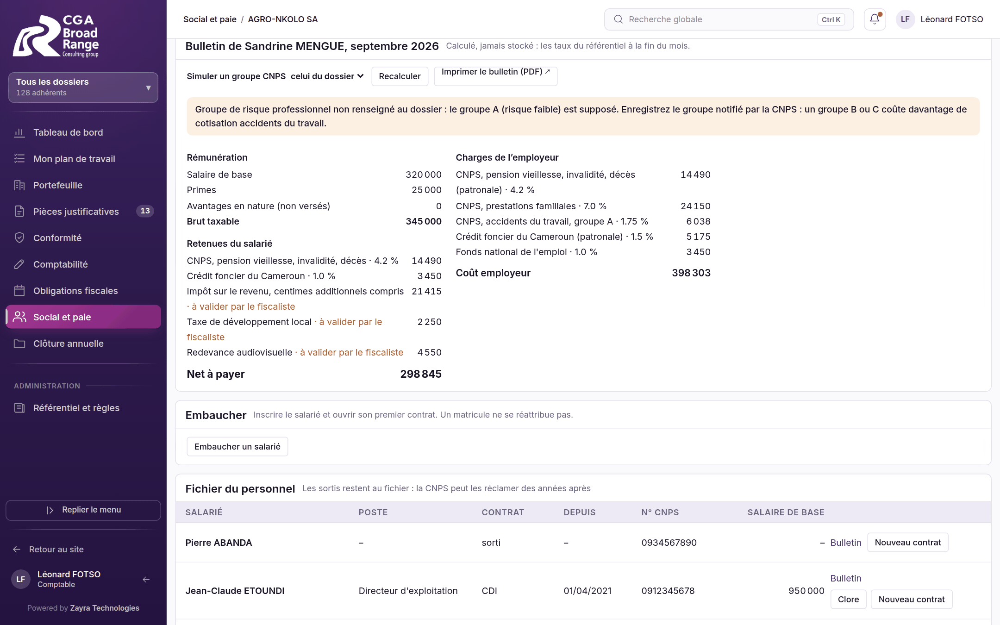
Un bulletin : rémunération, retenues du salarié, charges de l'employeur, net à payer. « Simuler un groupe CNPS » et Recalculer permettent de vérifier l'effet d'un autre groupe.
Un salarié à temps partiel sous le SMIG déclenche une alerte sur le bulletin, sans le refuser. La CNPS arrêtée peut être appelée à l'adhérent qui a mandaté le cabinet pour la payer (chapitre 12, « Fonds confiés »).
12Échéances fiscales, déclarations et quittances
L'échéancier est calculé depuis le profil du dossier, jamais ressaisi. La TVA se constitue depuis les journaux et se dépose par le réviseur. Les autres obligations (CNPS, retenues, IGS, patente) se déposent hors de la plateforme et s'y constatent.
L'échéancier
Qui
Tous ceux qui lisent les dossiers.
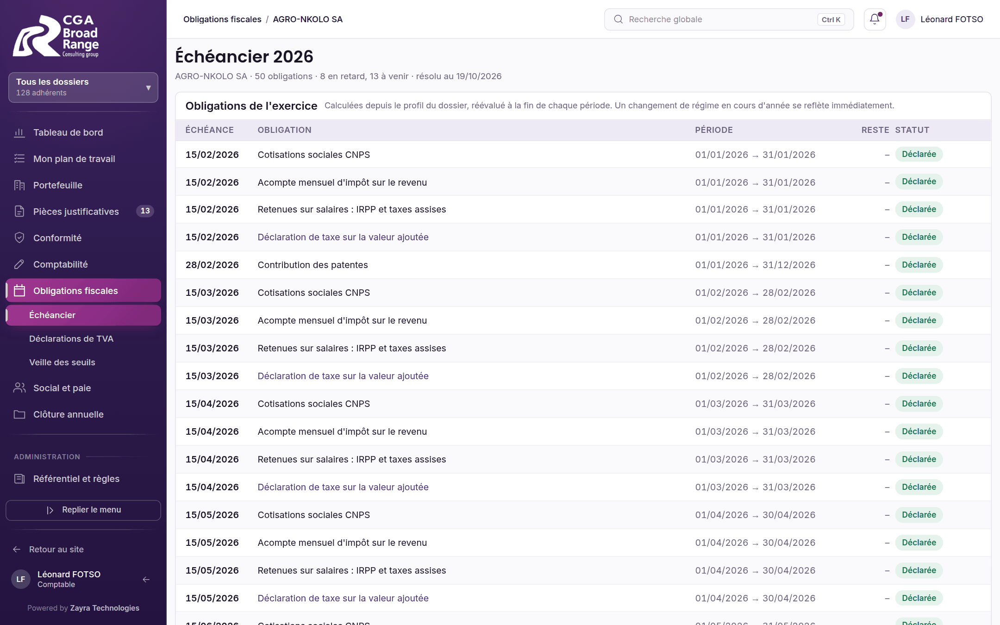
L'échéancier de l'exercice : chaque obligation avec sa période, ce qui reste et son statut (déclarée, à faire, en retard).
Sous l'échéancier : les relances d'échéance du jour (jalons J-15, J-7, J-2 et J+1, jour où la pénalité commence à courir), Estimer une pénalité (choisissez l'obligation en retard, le montant dû et la date de dépôt prévue, puis Estimer) et le catalogue des obligations (guichet, périodicité, jour limite).
Préparer et déposer la déclaration de TVA
Qui
Le comptable prépare et transmet ; le réviseur dépose, avec le second facteur.
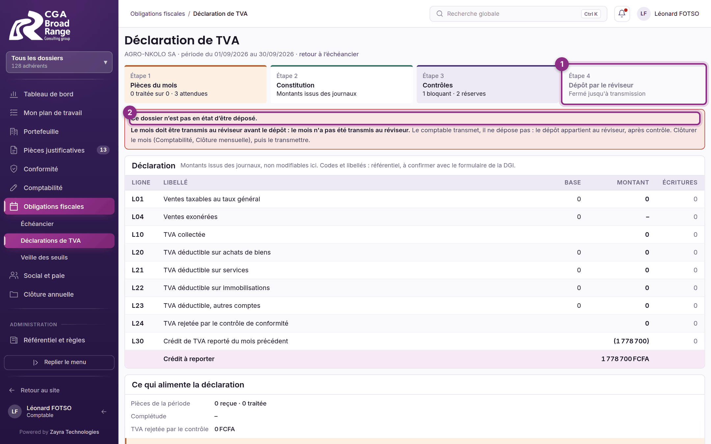
1Les quatre étapes 2Le motif qui empêche le dépôt, en clair
Obligations fiscales > Déclarations de TVA, sur le dossier choisi.
Étape 1, pièces du mois : combien sont traitées, combien sont attendues.
Étape 2, constitution : les lignes (ventes taxables, TVA collectée, TVA déductible, TVA rejetée par le contrôle, crédit reporté) viennent des journaux et ne se modifient pas ici.
Étape 3, contrôles : bloquants et réserves.
Étape 4, dépôt par le réviseur : fermée tant que le mois n'a pas été transmis au réviseur depuis la clôture mensuelle.
Le bloc Ce que le contrôle a évité chiffre la TVA qui aurait été réclamée puis refusée, et la liste des rejets pièce par pièce porte le code de la règle appliquée.
La plateforme ne transmet rien à la DGI : aucune interface n'est appelée. Le réviseur télédéclare sur le portail de la DGI, puis consigne le dépôt dans la plateforme. Les codes et libellés des lignes viennent du référentiel et sont à confirmer avec le formulaire de la DGI.
Une période sans opération donne une déclaration à néant. Elle reste due : l'obligation naît de l'assujettissement, pas de l'activité.
Constater un dépôt fait hors de la plateforme
À quoi ça sert
Consigner une obligation déposée ailleurs : CNPS, retenues sur salaires, IGS, patente.
Qui
Réviseur, avec le second facteur.
Dans l'échéancier du dossier, bloc Constater un dépôt, saisissez le code du second facteur si l'écran le demande.
Choisissez l'obligation déposée dans l'échéancier, saisissez le numéro de l'accusé, la date et l'heure de dépôt (heure de Douala), le montant constaté et, au besoin, la pièce jointe.
Consigner le dépôt. L'échéance passe à « Déclarée ».
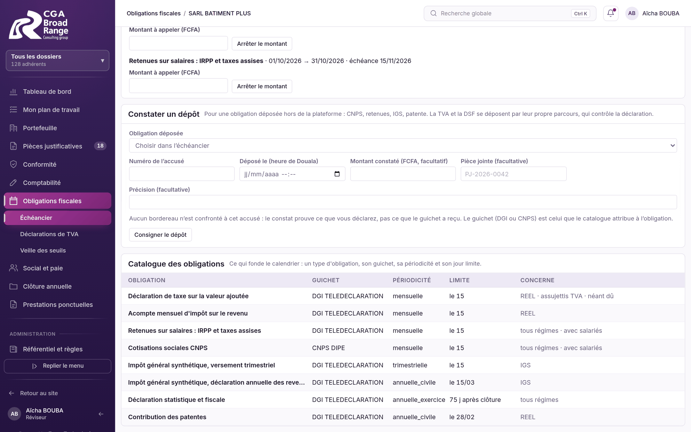
Le formulaire de constat, une fois la session renforcée.
Aucun bordereau n'est confronté à l'accusé : le constat prouve ce que vous déclarez, pas ce que le guichet a reçu. Recopiez l'accusé avec soin.
Fonds confiés : le cabinet paie pour l'adhérent
À quoi ça sert
Quand l'adhérent a mandaté le cabinet pour payer certaines obligations (par exemple CNPS et retenues sur salaires), le cabinet appelle les fonds, les reçoit à part des honoraires, paie l'administration et porte la quittance.
Qui
Réviseur ; la caisse pour la réception des fonds au guichet. Le mandat lui-même est accordé par le super administrateur.
Dans l'échéancier du dossier, bloc Payées par le cabinet, sous mandat de paiement, saisissez le montant à appeler pour l'échéance et cliquez sur Arrêter le montant.
L'adhérent remet ses fonds depuis son espace (mobile money par Tara) ou au guichet, où la caisse les constate. L'échéance indique « fonds reçus ».
Payez l'administration, puis portez la quittance sur l'échéance : elle passe à « Payée ».
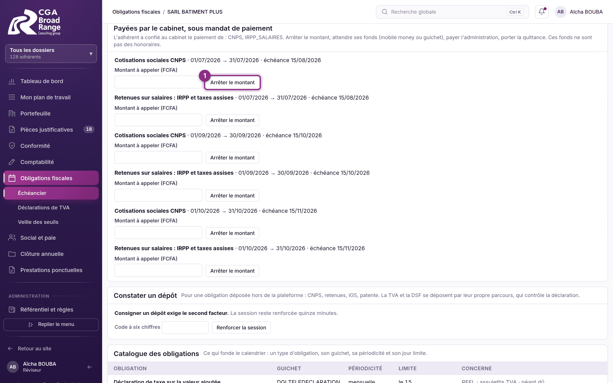
1Arrêter le montant à appeler pour une échéance mandatée.
Ces fonds ne sont pas des honoraires : la caisse les tient à part, comme fonds de tiers à reverser.
Vérifier une quittance envoyée par l'adhérent
Qui
Comptable et réviseur (droit « Vérifier une quittance »).
Quand l'adhérent paie lui-même sa TVA ou sa CNPS, il envoie la quittance depuis son espace. Elle apparaît sur l'échéance concernée dans l'échéancier du dossier.
Ouvrez la quittance en aperçu et comparez-la à l'échéance.
Validez-la avec son montant : l'échéance passe à « Payée » et l'écriture de paiement est proposée. Ou refusez-la en écrivant le motif, que l'adhérent lira.
La comparaison automatique du montant de la quittance avec le montant dû n'est pas encore faite : c'est au collaborateur de la vérifier. Aucune quittance n'attendait sur la pile au moment des captures, d'où l'absence d'image.
Veille des seuils
Veille des seuils compare le chiffre d'affaires lu dans les livres au seuil d'assujettissement à la TVA, et signale les adhérents qui sortent, ou vont sortir, du champ du centre (CGI art. 118). Cette revue ne résilie rien : la décision reste celle du cabinet.
13Clôture annuelle et DSF
La liasse fiscale se lit en continu. La DSF se prépare sur l'exercice clos, se relit, est validée par le réviseur, puis se dépose sur le portail de la DGI ; l'accusé est enfin consigné dans la plateforme.
Lire la liasse et l'impôt estimé
Qui
Tous ceux qui lisent la comptabilité. Clôturer l'exercice : réviseur et direction, avec un motif.
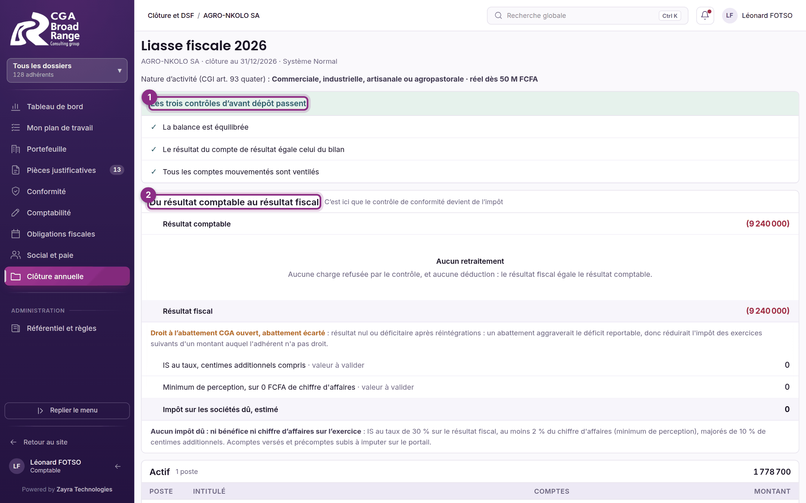
1Les trois contrôles d'avant dépôt 2Du résultat comptable au résultat fiscal, puis l'IS estimé
Choisissez le dossier, puis Clôture annuelle. Le système de présentation (normal ou minimal de trésorerie) est constaté d'après le dossier, jamais choisi.
Lisez Du résultat comptable au résultat fiscal : les charges refusées par le contrôle de conformité y sont réintégrées, puis l'abattement CGA est appliqué ou écarté, avec son motif.
L'impôt sur les sociétés estimé compare l'IS au taux et le minimum de perception. Les acomptes versés et précomptes subis s'imputent sur le portail.
Plus bas : actif, passif, charges, produits, et le plan de la liasse (quels comptes alimentent quel poste).
Préparer la DSF et ses pièces
Qui
Comptable et réviseur préparent ; le réviseur valide et dépose.
Ouvrez la liasse de l'exercice clos (par exemple 2025). Vérifiez que la fiche signalétique est validée (chapitre 4).
Préparer la DSF : la liasse est figée, avec son empreinte. Rien ne part à la DGI.
Relisez la version en PDF, puis faites-la valider par le réviseur.
Dans Pièces à joindre, pour chaque pièce du guide de la DGI : celles que la plateforme produit se téléchargent ; les autres se versent (Verser) ou se déclarent Sans objet. Le portail ne laissera pas soumettre sans elles.
Complétez les fiches des fournisseurs déclarés (téléphone, ville…) avec Compléter la fiche : le modèle « MODELE FOURNISSEURS » les reprend.
Pour le système normal, Télécharger la DSF au format DGI (Excel) : le modèle officiel, bilan et compte de résultat remplis, à téléverser tel quel, sous son nom.
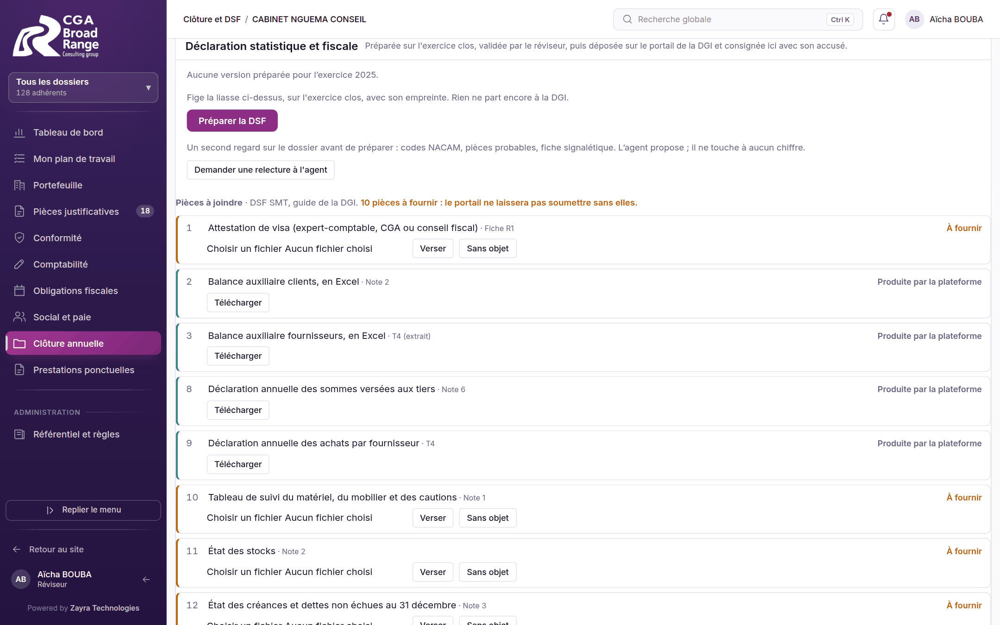
Une DSF 2025 à préparer : le bouton, puis les pièces à joindre, produites par la plateforme ou à fournir.
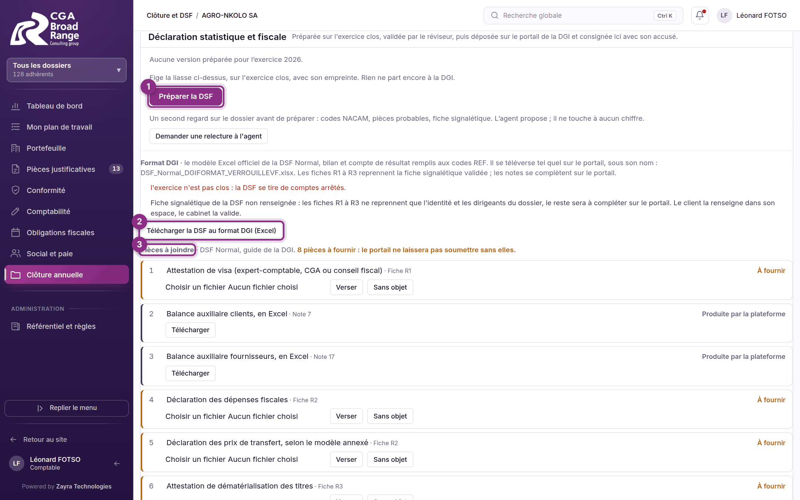
1Préparer la DSF 2Télécharger au format DGI 3Pièces à joindre. Sur un exercice en cours, l'écran rappelle que la DSF se tire de comptes arrêtés.
Déposer et consigner l'accusé
Le réviseur dépose la DSF sur le portail de la DGI, hors de la plateforme.
De retour dans la plateforme, il consigne le dépôt avec l'accusé de la DGI, sous second facteur.
L'échéancier affiche « Déclarée ». L'adhérent voit « Déposée à la DGI », l'accusé, et peut télécharger sa copie.
Le dépôt de la DSF reste manuel sur le portail de la DGI : la plateforme produit les fichiers et garde la trace, elle ne transmet pas. Les fiches R1 à R3 reprennent la fiche signalétique validée ; les notes annexes se complètent sur le portail.
Demander une relecture à l'agent propose un second regard (codes NACAM, pièces probables, fiche signalétique) quand la lecture par Claude est configurée. L'agent propose ; il ne touche à aucun chiffre.
14Honoraires, caisse et règlements
L'adhérent règle ses honoraires dans son espace par mobile money (opérateur Tara) ou au guichet du cabinet. La caisse constate les versements du guichet ; ceux de Tara se rapprochent seuls.
Encaisser un règlement au guichet
Qui
Responsable de caisse et administrateur.
Ouvrez Caisse.
À encaisser liste les clients qui ont accepté leur proposition (création, prestation). Honoraires des adhérents liste ce qui est exigible, le retard d'abord.
Sur la ligne du versement reçu, saisissez la référence du reçu, cochez « J'ai constaté le versement de … FCFA », puis Encaisser.
Pour une création ou une prestation, le dossier s'ouvre aussitôt, sans autre geste. Pour des honoraires, la ligne de l'adhérent change d'état et il reçoit son reçu.
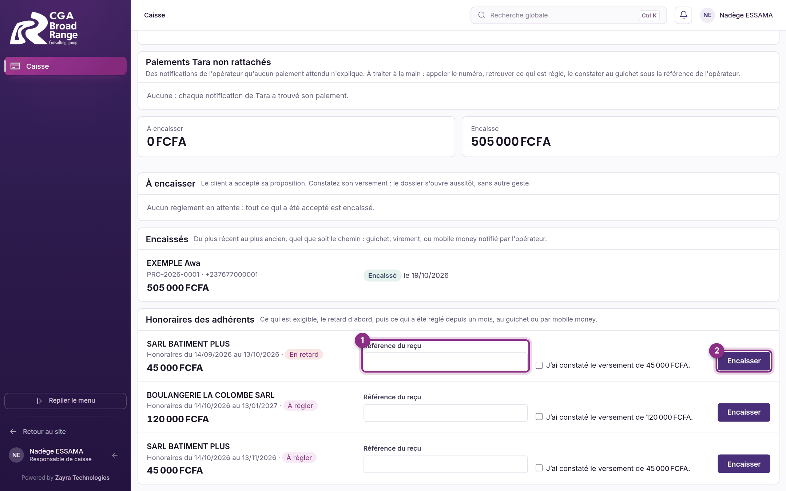
1Référence du reçu 2Encaisser, après avoir coché le constat du versement
Ne cochez « J'ai constaté le versement » qu'une fois l'argent réellement reçu et compté. Un paiement Tara notifié par l'opérateur ne s'encaisse pas au guichet : il se rapproche seul.
Le journal de caisse
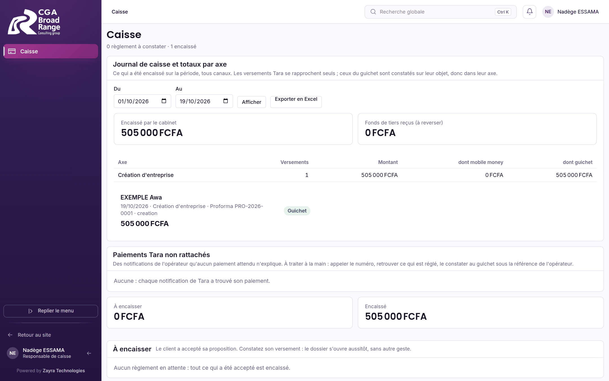
Le journal de caisse par période : encaissé par le cabinet, fonds de tiers reçus (à reverser), totaux par axe, mobile money et guichet séparés.
Choisissez la période (Du, Au) puis Afficher ; Exporter en Excel pour la comptabilité du cabinet.
Paiements Tara non rattachés : des notifications de l'opérateur qu'aucun paiement attendu n'explique. À traiter à la main : appeler le numéro, retrouver ce qui est réglé, le constater au guichet sous la référence de l'opérateur.
La direction lit le même journal, sans encaisser.
Sur la pile de démonstration, le paiement mobile money est simulé : la plateforme n'a pas encore d'identifiants marchands Tara réels.
Retard de règlement : règle, blocage et grâce
À quoi ça sert
Un dossier dont les honoraires ne sont pas réglés se lit, reçoit ses pièces et se règle ; passé le retard toléré, il ne se traite plus (saisie, déclarations et DSF refusées), sauf grâce.
Qui
Super administrateur, avec motif et second facteur.
Fixer la règle : dans Portefeuille, bandeau « Règlement des honoraires », dépliez Changer la règle de dépassement, saisissez les jours de retard tolérés et le motif, puis Enregistrer la règle.
Accorder une grâce : dans la fiche du dossier, bloc Faveurs, dépliez Accorder une grâce, choisissez la date jusqu'à laquelle le dossier se traite et le motif, puis Accorder. Le dossier passe « Sous grâce ».
Le même bloc accorde ou retire le mandat « le cabinet paie pour moi » (fonds confiés, chapitre 12).
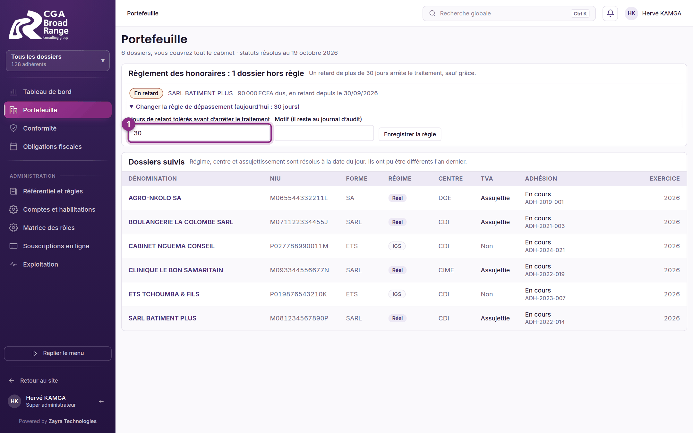
1Jours de retard tolérés.1Jusqu'au 2Motif, conservé au journal d'audit.
Fixer les tarifs de l'offre
Qui
Direction seule.
Tarifs de l'offre : chaque prestation avec son prix du jour et son statut.
Fixer ce prix : le prix s'applique à tout devis établi à partir de sa date ; un devis déjà remis garde son prix. La décision est tracée dans « Les décisions ».
Renseignez l'identité fiscale du cabinet (NIU, RCCM, régime de TVA) que porte la facture définitive.
1Fixer ce prix. Les créations d'entreprise et prestations ponctuelles sont arrêtées sur la proposition de chaque client.
Tant qu'un prix n'est pas fixé, il s'affiche comme indicatif sur le site et l'application, et aucun client ne peut le payer en ligne.
Souscriptions en ligne
Souscriptions en ligne liste les souscriptions payées dont l'accès reste à ouvrir (geste de l'administration des comptes), et permet de relancer à la main deux travaux normalement planifiés : Rapprocher les paiements (interroge l'opérateur sur les paiements restés en attente) et Appeler les mensualités. « Services à suspendre » est une décision, pas une exécution : l'adhérent garde la lecture de ses documents.
15Prestations ponctuelles
Analyse de contrat, rédaction de contrat, DSF ciblée : ce qui suit la vente d'une prestation ponctuelle. Le juriste décide chaque point, un second valide, et rien ne part au client sans eux.
Qui
Traiter : chargé de formalités (juriste) et réviseur. Valider : réviseur ou direction, jamais celui qui a soumis.
Ouvrir une mission
Prestations ponctuelles > Ouvrir une mission.
Choisissez la prestation, saisissez l'objet, le client et son courriel. Si la demande a été payée en ligne, indiquez le dossier commercial payé (DC-…) : la mission s'y rattache sans recopier de référence.
Joignez le document (PDF ou photo) puis Ouvrir la mission.
1Prestation 2Objet 3Ouvrir la mission
Traiter, soumettre, valider
La mission s'ouvre avec le document en aperçu. Ajoutez les points d'analyse (+ Ajouter un point à la main) : rubrique, gravité, titre, texte, citation du contrat.
Décidez chaque point : Retenir, Reformuler (puis Retenir ainsi) ou écarter.
Soumettre au second regard quand tous les points sont décidés. Rien d'inachevé ne passe.
Le valideur relit et clique sur Valider et livrer. Le livrable (PDF, et Word pour un contrat rédigé) ne porte que ce qui a été retenu.
Une analyse de contrat ouverte : le contrat (spécimen) à gauche, les points à droite.
Sans clé d'API, l'écran indique « Lecture par l'agent non configurée (clé d'API du cabinet absente) : ajoutez les points à la main, dans la même structure ». Le travail se fait entièrement à la main ; un contrat à rédiger peut partir d'un modèle du cabinet. Pour une DSF ciblée, la DSF se prépare dans le parcours habituel (chapitre 13).
16Recrutement : les offres de poste
Les offres se rédigent dans la console, se publient sur le site du cabinet, et les candidatures reviennent avec le CV.
Qui
Direction et administrateur (offres) ; direction ou rôle « ressources humaines » créé par le cabinet (candidatures).
Offres de poste > Rédiger une offre.
Saisissez l'intitulé, le lieu, le contrat et la date limite éventuelle.
Rédigez « Le poste » et « Qualifications attendues » au mini-éditeur (G gras, I italique, T titre, puce liste). Aperçu montre ce que lira le candidat.
Rédiger en brouillon. L'offre reste invisible du site.
Publier sur le site quand elle est prête. Elle se clôt ensuite.
Le bouton du nombre de candidatures ouvre la liste : lisez, téléchargez le CV (PDF), décidez, puis préparez la réponse depuis le texte type de la décision et envoyez-la au candidat.
1Intitulé 2Aperçu 3Rédiger en brouillon1Publier sur le site. Le compteur de candidatures est à côté.
Une réponse au candidat qui contient encore « [à compléter] » est refusée : complétez le texte type avant l'envoi.
17Documents remis à l'adhérent
Ce que la console produit et que le client retrouve dans son espace ou reçoit par courriel. Aucun de ces documents ne se refait à la main.
Document
Produit par
Comment il arrive au client
Proforma numérotée (PDF)
Émission de la proforma (chapitre 5)
Courriel avec le lien d'acceptation et le PDF ; retrouvée ensuite dans son espace, sans dépendre du lien du courriel.
Reçu de règlement
Encaissement en caisse ou paiement Tara
Dans son espace et par courriel.
Avis par courriel
Chaque geste du cabinet : honoraires réglés, quittance vérifiée ou refusée (avec le motif)
Courriel et notification dans l'espace.
Lien de suivi de création
Ouverture du dossier de création
Courriel d'ouverture ; à redonner depuis le dossier (chapitre 5).
Documents du dossier de création
Pièces versées par la juriste (statuts, attestations…)
Dans l'espace de la cliente, en aperçu ou en téléchargement, avec leur provenance.
Bulletin de paie (PDF)
Social et paie, Imprimer le bulletin (PDF)
Remis par le comptable.
Relance de pièces
Relancer un adhérent (chapitre 6)
Notification dans l'espace et courriel.
Copie de la DSF déposée
Consignation de l'accusé (chapitre 13)
Dans « Ma DSF » : « Déposée à la DGI », l'accusé et la copie à télécharger.
Livrable de prestation ponctuelle
Validation de la mission (chapitre 15)
PDF, et Word pour un contrat rédigé.
L'espace de l'adhérent (site et application mobile) fait l'objet de son propre guide.
18Pilotage de la direction
Les dossiers rangés par risque, jamais par nom ; la charge de chaque collaborateur ; un rapport mensuel archivé, exigible en cas de contrôle de l'agrément.
Qui
Direction seule. Le réviseur voit tous les dossiers mais n'accède pas au pilotage : voir les dossiers n'est pas piloter le cabinet.
Les dossiers à risque
Du plus risqué au moins risqué. Chaque score se décompose : obligations échues, pièces non traitées, demandes sans réponse, anomalies bloquantes, avec leur poids.
Ouvrez Pilotage > Dossiers à risque. Traitez ce qui est en haut.
Cliquez sur un dossier : le détail descend du score jusqu'aux pièces et obligations qui le causent.
Dans Décider, choisissez une mesure (renforcer le suivi, exiger une régularisation datée, convoquer un rendez-vous de cadrage) et cliquez sur Décider, avec un motif.
Le détail d'un dossier « À traiter » et les mesures proposées.
Les poids du score ne relèvent d'aucun texte : ce sont des réglages de la direction, portés au référentiel comme politique du cabinet.
Charge et production
Charge pondérée de chaque collaborateur, dossiers sans comptable et réaffectations proposées.
Au-delà de 90 % un collaborateur est saturé ; la console propose alors de réaffecter un dossier vers un collègue du même rôle, sans dépasser 85 %. Une réaffectation prévient les deux collaborateurs et le chargé de clientèle ; l'adhérent n'est pas notifié. Un dossier « sans comptable » doit être confié depuis Comptes et habilitations (chapitre 19).
Le rapport mensuel
Pilotage > Rapport mensuel, choisissez le mois.
Générer le rapport mensuel. Il reprend les chiffres des écrans à la date du rapport, et s'archive. Une regénération crée une version suivante.
La génération et les rapports archivés.
Journal des dérogations et qualité des règles
Conformité > Journal des dérogations liste chaque constat écarté : date, règle, dossier, pièce, motif, pièce d'appui, enjeu levé et statut. Exporter pour contrôle le remet à un vérificateur. Qualité des règles mesure, règle par règle, le taux de constats écartés : une règle souvent écartée est mal calibrée et se corrige au référentiel.
Statistiques par règle sur une période. Aucune règle n'est jugée sur moins de cinq constats.
Exploitation de la plateforme
Exploitation (direction et administrateur) montre l'état des services, les travaux périodiques (relais, rapprochement des paiements, relances) et la boîte d'envoi. Faire un tour relance un travail périodique. Un élément en quarantaine (refusé dix fois) n'est jamais supprimé : on corrige la cause, puis on le remet en circulation.
Les services et les travaux périodiques.
19Administration
Les comptes, les habilitations, la matrice des rôles et le référentiel. Un compte n'est jamais supprimé : son identifiant figure dans les écritures qu'il a validées et dans le journal d'audit.
Inviter un collaborateur
Qui
Administrateur (et super administrateur).
Comptes et habilitations > Inviter un collaborateur.
Saisissez l'adresse, le prénom, le nom, le téléphone, le rôle et la date à partir de laquelle il est habilité.
Choisissez le périmètre : des dossiers (un NIU par ligne) ou tout le cabinet.
Envoyer l'invitation. Le lien d'activation part à l'adresse du collaborateur ; il ne s'affiche pas à l'écran.
Le formulaire d'invitation.
Sans dossier désigné, un comptable n'en voit aucun tant qu'un dossier ne lui est pas confié.
Confier un dossier, fermer un rôle
1Un rôle, un périmètre, un intervalle 2Fermer ce rôle
Confier un dossier : ajoute un dossier au périmètre, à compter d'aujourd'hui. L'historique antérieur n'est pas réécrit.
Fermer ce rôle : met fin à l'habilitation (changement de poste, départ).
Le bandeau Dossiers sans comptable signale ce que personne ne tient.
Suspendre un compte, fermer ses sessions
1Suspendre. La colonne « 2ᵉ facteur » indique qui est enrôlé.
Suspendre un collaborateur qui part ; Rétablir un compte suspendu.
Fermer ses sessions en cas d'appareil perdu ou de session douteuse : le titulaire se reconnecte, l'intrus non.
Retirer le second facteur d'un collègue
Quand
Téléphone perdu ou changé, clé non enregistrée.
Qui
Administrateur, jamais pour son propre compte.
Vérifiez la demande auprès du titulaire, par un appel.
Dans la liste des comptes, colonne « 2ᵉ facteur », cliquez sur Réinitialiser.
Rédigez le motif (au moins trente caractères : comment la perte a été signalée et vérifiée), cochez la confirmation, puis Retirer le second facteur.
Les sessions du titulaire sont fermées ; il associe un nouvel appareil (chapitre 2).
1Motif 2Retirer le second facteur
La matrice des rôles
Qui
Lecture : administrateur. Réglage : super administrateur, sous second facteur, avec un motif.
Chaque rôle, chaque droit, d'un coup d'œil. Cliquez sur l'en-tête d'un rôle pour le régler.
Ouvrez Matrice des rôles et renforcez la session (code du second facteur).
Pour modifier un rôle existant : cliquez sur son nom, cochez ou décochez les droits, saisissez le motif, puis Enregistrer les droits.
Pour un poste nouveau : + Créer un rôle du cabinet, nommez-le, cochez les droits (par exemple, pour les ressources humaines : « Éditer le site et les offres de poste » et « Traiter les candidatures »), le motif, puis Créer le rôle.
Le rôle s'attribue ensuite depuis Comptes et habilitations.
1Nom du rôle 2Créer le rôle. Les gestes réservés au client et à l'administration ne se cochent pas.
Le référentiel et les règles
À quoi ça sert
Toutes les valeurs légales (taux, seuils, délais) et les règles de contrôle, chacune datée, sourcée et signée. Aucune n'est écrite dans le logiciel : une loi de finances se répercute ici.
Qui
Lecture : tous. Proposer et valider : fiscaliste.
Le référentiel : chaque paramètre avec sa valeur, sa date d'application et son statut (validé ou à valider).
Valider cette version : le fiscaliste confirme une valeur sur le Code général des impôts en vigueur, la loi de finances et la circulaire d'application.
Proposer une nouvelle version : nouvelle valeur, date d'effet, fondement et source. L'ancienne valeur reste applicable aux opérations antérieures.
Règles construites par le cabinet : Construire une règle en conditions, l'éprouver sur les factures (Éprouver sur les factures), puis la faire valider par une autre personne. Validée, elle contrôle les factures dès le contrôle suivant.
1Valider cette version (vue du fiscaliste).Le catalogue des règles, la construction d'une règle et l'essai sur une facture.
Au 19 octobre 2026, 17 des 67 paramètres portent le statut « à valider ». L'écran le rappelle : aucun chiffre produit par la plateforme n'est opposable tant qu'un fiscaliste nommé ne les a pas confirmés.
20Questions fréquentes
Je ne vois pas un dossier que je suis censé tenir.
Le dossier ne vous a pas été confié, ou pas encore à la date du jour. Demandez à l'administrateur de vous le confier (Confier un dossier).
Une entrée de menu a disparu ou un écran affiche « Accès réservé ».
Votre rôle ne l'ouvre pas. Le message dit quel profil y a droit ; l'habilitation se demande à l'administrateur.
Je me suis trompé dans une écriture validée.
Contre-passez-la avec un motif, puis saisissez l'écriture juste. Il n'existe pas de suppression. Si le mois est déjà transmis, datez la correction dans un mois ouvert.
La déclaration de TVA reste « fermée jusqu'à transmission ».
Le mois n'a pas été transmis au réviseur. Passez par Clôture mensuelle, puis Transmettre au réviseur.
Une facture ne veut pas se comptabiliser.
Elle porte une anomalie bloquante. Demandez la facture rectificative (pièces attendues) ou faites écarter le constat par le réviseur, avec un motif.
Mes codes du second facteur sont refusés.
Réglez l'heure du téléphone en automatique. Si l'application a été perdue, l'administrateur retire votre second facteur et vous en associez un nouveau.
La saisie, la déclaration ou la DSF d'un dossier sont refusées alors que tout est prêt.
Le dossier est probablement « Bloqué » pour retard d'honoraires. Le bandeau du portefeuille le dit. Il faut un règlement, ou une grâce accordée par le super administrateur.
La plateforme envoie-t-elle les déclarations à la DGI ou à la CNPS ?
Non. Elle prépare les montants et les fichiers au format attendu ; le dépôt se fait sur les portails officiels, puis se consigne dans la plateforme avec l'accusé.
Sans la lecture automatique par Claude, puis-je travailler ?
Oui. Toutes les tâches se font à la main, dans les mêmes écrans. L'agent, quand il est configuré, ne fait que proposer.
Un client dit avoir payé par mobile money mais rien n'apparaît.
Regardez Paiements Tara non rattachés dans la caisse. S'il y figure, retrouvez le règlement et constatez-le sous la référence de l'opérateur. Sinon, demandez au client sa référence de transaction.
Le lien « Retour au site » ne mène pas au site.
Signalez-le à l'administrateur : l'adresse du site est un réglage de la plateforme (voir l'annexe).
21Glossaire
Terme
Définition
Accusé
Preuve de dépôt délivrée par la DGI ou la CNPS, à consigner dans la plateforme.
Adhérent
Entreprise suivie par le centre de gestion agréé, et le compte de son dirigeant.
Anomalie bloquante
Constat qui interdit la comptabilisation de la pièce en l'état.
Brouillon
Écriture enregistrée mais non validée. Elle n'entre pas dans la balance.
CGA
Centre de gestion agréé. L'adhésion ouvre droit à un abattement sur le bénéfice déclaré.
CNPS
Caisse nationale de prévoyance sociale. Le groupe de risque (A, B, C) fixe le taux accidents du travail.
Constat
Résultat d'une règle de conformité sur une pièce : bloquant, majeur ou avertissement.
Contre-passation
Écriture inverse qui annule une écriture validée, avec un motif.
Dérogation
Constat écarté par le réviseur, avec motif ; elle se lève, elle ne se supprime pas.
DP
Demande de pièce : ce que le cabinet attend de l'adhérent.
DSF
Déclaration statistique et fiscale annuelle, déposée sur le portail de la DGI.
Faveur
Écart à la règle commune accordé par le super administrateur : grâce de règlement, mandat « le cabinet paie pour moi ».
Fonds de tiers
Sommes confiées par l'adhérent pour payer l'administration (TVA, CNPS) ; jamais des honoraires.
Grâce
Autorisation datée de traiter un dossier en retard d'honoraires.
Guichet
Le comptoir du cabinet où les règlements en espèces ou par chèque sont constatés par la caisse.
IGS
Impôt général synthétique, régime des petites entreprises.
IRPP
Impôt sur le revenu des personnes physiques : retenues sur salaires et acomptes mensuels.
Liasse
Ensemble des états (bilan, compte de résultat, notes) qui forme la DSF.
NACAM
Nomenclature des activités du Cameroun (INS), exigée pour chaque activité dans la DSF.
NIU
Numéro d'identifiant unique du contribuable.
Proforma
Proposition de prix détaillée, numérotée, que le client accepte en ligne.
Quittance
Preuve de paiement d'une obligation à l'administration.
RCCM
Registre du commerce et du crédit mobilier.
Référentiel
Base des valeurs légales et des règles, datées et sourcées.
Second facteur
Code à six chiffres de l'application d'authentification, exigé pour les gestes sensibles.
Session renforcée
Session pendant quinze minutes après la saisie du code du second facteur.
Tara
Opérateur de paiement par mobile money utilisé par le cabinet.
TVA
Taxe sur la valeur ajoutée, 19,25 % centimes additionnels compris.
Annexe : ce qui reste manuel ou partiel
Ce récapitulatif reprend les encadrés jaunes du guide, pour que le personnel sache d'emblée ce qui se fait hors de la plateforme.
Sujet
État au 19 octobre 2026
Dépôt TVA, CNPS, DSF
Manuel sur les portails officiels ; la plateforme prépare et consigne l'accusé, elle ne transmet pas.
Référentiel
17 paramètres sur 67 à valider par le fiscaliste ; paie et rapports signalent les lignes concernées.
Lecture automatique par Claude
Optionnelle ; sans clé d'API, saisie et analyse à la main.
WhatsApp
Envoi automatique inactif (compte de la plateforme d'envoi non ouvert) ; bouton d'ouverture manuelle seulement.
Paiement Tara
Simulé sur la pile de démonstration (pas d'identifiants marchands réels).
Quittances
Comparaison automatique du montant non faite : vérification humaine.
Balances auxiliaires
Pas encore au modèle de la DGI.
Export Sage 100
Profil non confronté à une installation réelle.
Tarifs
Six prix restent à fixer par la direction ; non payables en ligne d'ici là.
Score de charge (proforma)
Déclaré par le responsable, pas mesuré.
Lien « Retour au site »
Sur la pile de démonstration, il pointe une adresse de site qui ne répond pas (réglage de l'adresse du site à corriger par l'exploitant).